O que é Cálculo Numérico
Quanto é a raiz quadrada de 2? Onde um planeta vai estar no mês que vem? Vai chover amanhã? Para quase todas as perguntas importantes da ciência não existe uma fórmula que dê a resposta exata. O Cálculo Numérico é a arte de chegar tão perto quanto for preciso, usando só contas simples, e de saber exatamente quão perto chegamos.
O matemático Lloyd Nick Trefethen, da Universidade de Oxford, resumiu a área numa frase: Cálculo Numérico (ou análise numérica) é o estudo dos algoritmos para os problemas da matemática contínua. [49] “Contínua” quer dizer tudo o que envolve números reais, curvas, áreas, velocidades e mudanças; “algoritmo” é uma receita com um número finito de passos. O desafio é trocar algo infinito, como as infinitas casas decimais de √2, por uma receita que termina.
![Fluxo em quatro etapas. Um problema contínuo, como achar a raiz de 2, a área sob uma curva ou a solução de uma equação, vira um algoritmo com passos finitos de soma, subtração, multiplicação e divisão. O algoritmo produz uma resposta aproximada, como 1,41421, e o erro é medido. Se o erro ainda for grande, o algoritmo repete. Embaixo, os três tipos de erro: de modelo, quando a equação simplifica a realidade; de truncamento, quando paramos um processo infinito; e de arredondamento, quando guardamos só algumas casas decimais.](rc_images/CalcNumConceito.svg)
Três ideias que atravessam toda a história
- Aproximar: em vez de buscar o valor exato, buscamos um valor bom o bastante. Um engenheiro não precisa de √2 com um milhão de casas; precisa de umas poucas, certas.
- Iterar: repetir uma conta simples muitas vezes, cada vez chegando mais perto. Quase todos os métodos deste artigo são repetições inteligentes.
- Controlar o erro: saber quanto a resposta pode estar errada. Um resultado sem estimativa de erro é só um palpite com muitas casas decimais.
Neste artigo, vamos seguir essas três ideias por quatro mil anos: das tabuletas de argila da Babilônia aos supercomputadores e à inteligência artificial. Em cada época, veremos quem foram os pensadores, como era o mundo, qual problema eles queriam resolver, a teoria explicada passo a passo e exemplos de uso.
As origens em ordem cronológica
A linha do tempo abaixo mostra as dez paradas da nossa viagem. As datas não estão em escala: entre a Babilônia e Arquimedes passaram-se mais de 1.500 anos; entre o ENIAC e hoje, menos de 80.
![Linha do tempo com onze marcos, fora de escala: c. 1800 a.C., Babilônia: √2 com 6 casas na tabuleta YBC 7289; c. 250 a.C., Arquimedes: π entre dois polígonos de 96 lados; c. 200 a.C.–263, China: Nove Capítulos e Liu Hui: sistemas lineares; 499–c. 1400, Índia: senos, zero, interpolação e séries infinitas; 820 · 1424, Bagdá e Samarcanda: al-Khwarizmi e al-Kashi: algoritmo e iteração; 1669 · 1690, Newton e Raphson: raízes de equações pela reta tangente; 1768 · 1901, Euler, Runge, Kutta: prever o futuro com equações diferenciais; 1801 · 1809, Gauss: reencontra Ceres com mínimos quadrados; 1922, Richardson: previsão do tempo com diferenças finitas, à mão; 1946–1985, Era digital: ENIAC, Monte Carlo, von Neumann, Turing IEEE 754; hoje, Exaescala e IA: 10¹⁸ contas por segundo e IA que inventa algoritmos.](rc_images/CalcNumLinhaTempo.svg)
Repare num padrão: cada época herdou as ferramentas da anterior. Newton redescobriu o método babilônico; a eliminação de Gauss já estava num livro chinês de dois mil anos antes; e os computadores eletrônicos só fizeram, muito mais depressa, o que calculistas humanos já faziam à mão.
1. Babilônia e Heron: a raiz quadrada
Quem foram
Não sabemos o nome do escriba babilônico que, por volta de 1800 a.C., gravou numa pequena tabuleta de argila a melhor aproximação de √2 do mundo antigo. A tabuleta, chamada YBC 7289, está hoje na coleção babilônica da Universidade Yale, nos Estados Unidos. Ela provavelmente era um exercício escolar: um aluno copiando o que o professor ensinava. [14]
Quase dois mil anos depois, Heron de Alexandria (viveu por volta do ano 60 d.C.) descreveu com clareza o mesmo método no livro Métrica. Heron era engenheiro e inventor: projetou autômatos, um órgão movido a água e a eolípila, uma espécie de máquina a vapor de brinquedo. [33]
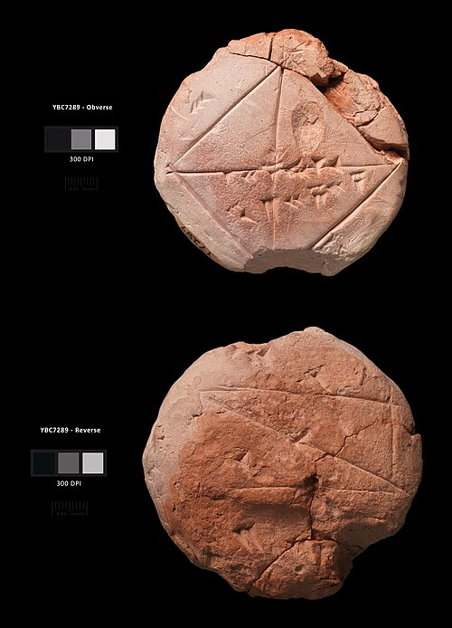
Foto: Yale Peabody Museum · CC0
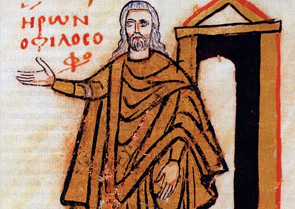
Retrato imaginado · domínio público
O mundo naquela época
| Data | Onde eles viviam | No resto do mundo |
|---|---|---|
| c. 1792–1750 a.C. | Reinado de Hamurábi na Babilônia, na atual Iraque; o famoso código de leis é de cerca de 1754 a.C. | No Egito, Médio Império; na Europa, as últimas fases de Stonehenge. |
| c. 1800–1600 a.C. | Escolas de escribas ensinam matemática em tabuletas de argila, em base 60. | Na China, surgem as primeiras cidades da cultura Erlitou, antes da dinastia Shang. |
| c. 60 d.C. | Heron trabalha em Alexandria, no Egito, então parte do Império Romano. | Em Roma, o grande incêndio de 64 d.C.; na China, a dinastia Han; em 105 d.C., Cai Lun aperfeiçoa o papel. |
O problema
Os babilônios eram ótimos agrimensores: mediam terrenos, canais de irrigação e construções. Uma pergunta aparece o tempo todo: quanto mede a diagonal de um quadrado? Pelo que hoje chamamos de teorema de Pitágoras, a diagonal de um quadrado de lado 1 é √2. O problema é que √2 não é uma fração: nenhuma divisão de números inteiros dá exatamente esse valor. Suas casas decimais nunca terminam nem se repetem.
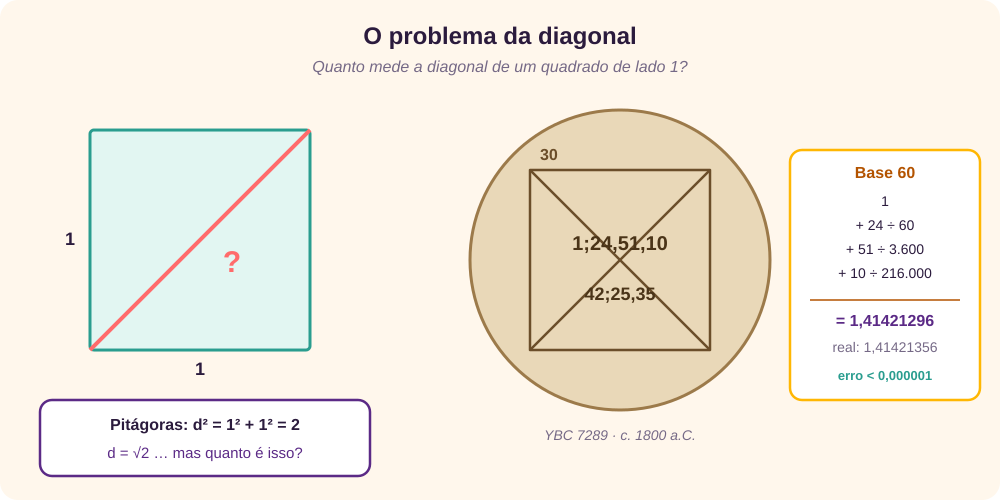
Os babilônios escreviam números na base 60 (é dela que vêm os 60 minutos da hora e os 360 graus do círculo). Na tabuleta aparece 1;24,51,10, que significa 1 + 24/60 + 51/3.600 + 10/216.000 = 1,41421296. O valor real é 1,41421356: o erro é menor que um milionésimo. [14]
A teoria, passo a passo
Ninguém sabe ao certo como os babilônios chegaram a esse número, mas o método mais aceito é o que Heron descreveu. A ideia é geométrica e muito bonita. Pense num retângulo com área 2. Se ele fosse um quadrado, o lado seria exatamente √2. Então vamos “quadradear” o retângulo aos poucos:
- Comece com um retângulo de lados 1 e 2 (área 2, mas nada quadrado).
- Um lado é pequeno demais e o outro, grande demais. Faça a média: (1 + 2) ÷ 2 = 1,5. Esse é o novo lado.
- Para manter a área 2, o outro lado tem de ser 2 ÷ 1,5 = 1,333.
- Repita: média de 1,5 e 1,333 dá 1,4167. E assim por diante.
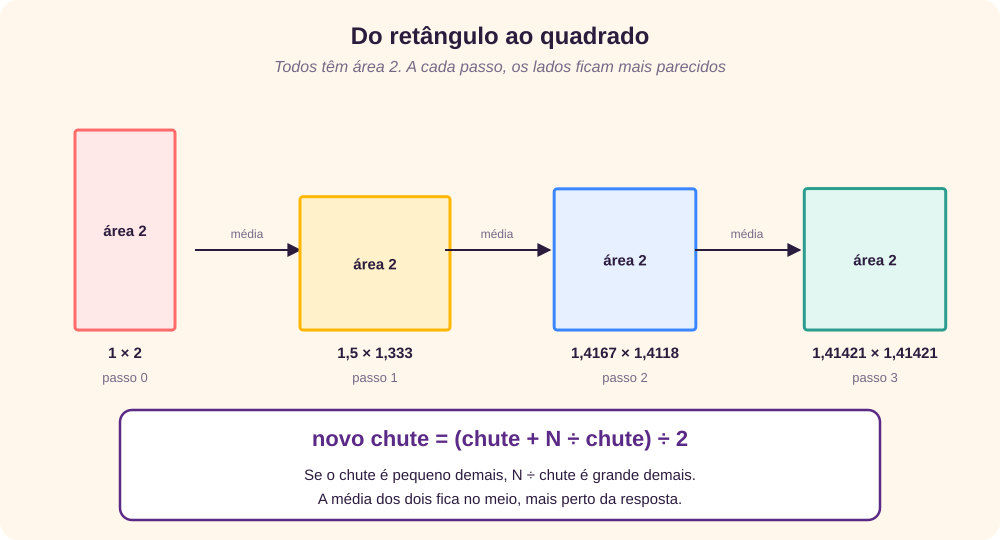
Em forma de receita, para calcular √N:
novo chute = (chute + N ÷ chute) ÷ 2 Por que funciona? se chute < √N, então N ÷ chute > √N se chute > √N, então N ÷ chute < √N → a resposta está sempre ENTRE os dois, e a média fica mais perto
O mais impressionante é a velocidade: a cada passo, a quantidade de casas decimais certas quase dobra. Os matemáticos chamam isso de convergência quadrática, e vamos reencontrá-la com Newton, 3.400 anos depois.
Exemplos de uso
![À esquerda, tabela para a raiz de 2 começando no chute 1. Passo 1: chute 1, 2 dividido por 1 é 2, média 1,5, nenhuma casa certa. Passo 2: chute 1,5, 2 dividido por 1,5 é 1,3333, média 1,41667, duas casas certas. Passo 3: chute 1,41667, divisão 1,41176, média 1,414216, cinco casas certas. Passo 4: média 1,41421356237, onze casas certas. As casas certas quase dobram a cada passo. À direita, o exemplo de Heron de Alexandria para a raiz de 720: chute 27, 720 dividido por 27 dá 26 e dois terços, a média é 26 e cinco sextos, 26,8333, contra o valor real 26,8328.](rc_images/CalcNumBabiloniaExemplo.svg)
No exemplo de Heron, ele queria a área de um triângulo e precisou de √720. Como 27 × 27 = 729, bem perto de 720, ele começou com 27. Um único passo deu 26 5/6 = 26,8333, quando o valor real é 26,8328. [33] Heron ainda explicou que, se quisermos mais precisão, basta repetir com o novo valor. Essa frase é, talvez, a primeira descrição escrita de um método iterativo.
E isso não é só história: variações desse método ainda são usadas por calculadoras, bibliotecas de software e processadores para calcular raízes quadradas, porque ele é simples, rápido e só usa soma e divisão.
2. Arquimedes: cercando o número π
Quem foi
Arquimedes de Siracusa (c. 287–212 a.C.) é considerado um dos maiores matemáticos de todos os tempos. Viveu na Sicília, que então era uma colônia grega. Estudou a alavanca (“Dê-me um ponto de apoio e moverei o mundo”), o empuxo dos líquidos (a famosa história do “Eureka!”) e inventou máquinas de guerra para defender a cidade. Morreu em 212 a.C., quando os romanos invadiram Siracusa; segundo a tradição, um soldado o matou enquanto ele desenhava figuras na areia. [29]
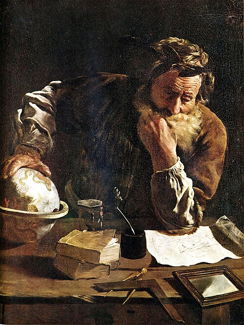
Domenico Fetti, 1620 · domínio público
O mundo naquela época
| Data | Onde ele vivia | No resto do mundo |
|---|---|---|
| c. 300 a.C. | A Biblioteca de Alexandria reúne os sábios do mundo grego; Euclides escreve os Elementos. | Na Índia, o Império Máurya; mais tarde, o imperador Ashoka (c. 268–232 a.C.). |
| c. 240 a.C. | Eratóstenes, amigo e correspondente de Arquimedes, mede a circunferência da Terra. | Na China, Qin Shi Huang unifica o país em 221 a.C. e começa a Grande Muralha. |
| 218–201 a.C. | Segunda Guerra Púnica, entre Roma e Cartago; Siracusa fica do lado de Cartago e cai em 212 a.C. | Aníbal atravessa os Alpes com elefantes em 218 a.C. |
O problema
Todo círculo, pequeno ou grande, tem a mesma proporção entre a volta (a circunferência) e a largura (o diâmetro). Esse número é o π. Ele é necessário para calcular rodas, colunas, cisternas, áreas de terrenos redondos e órbitas de astros. Mas medir com uma corda dá, no máximo, duas casas certas. E π, como √2, tem infinitas casas decimais que não se repetem.
A teoria, passo a passo
A ideia genial de Arquimedes, no livro A medida do círculo, foi espremer o círculo entre duas figuras que sabemos medir: polígonos. [29]
- Desenhe um hexágono (6 lados) dentro do círculo. O perímetro dele é menor que a circunferência.
- Desenhe outro hexágono por fora, encostando no círculo. O perímetro dele é maior.
- Então π está entre os dois: 3,000 < π < 3,464.
- Agora dobre o número de lados: 12, 24, 48, 96. Os polígonos grudam cada vez mais no círculo, e o intervalo aperta.
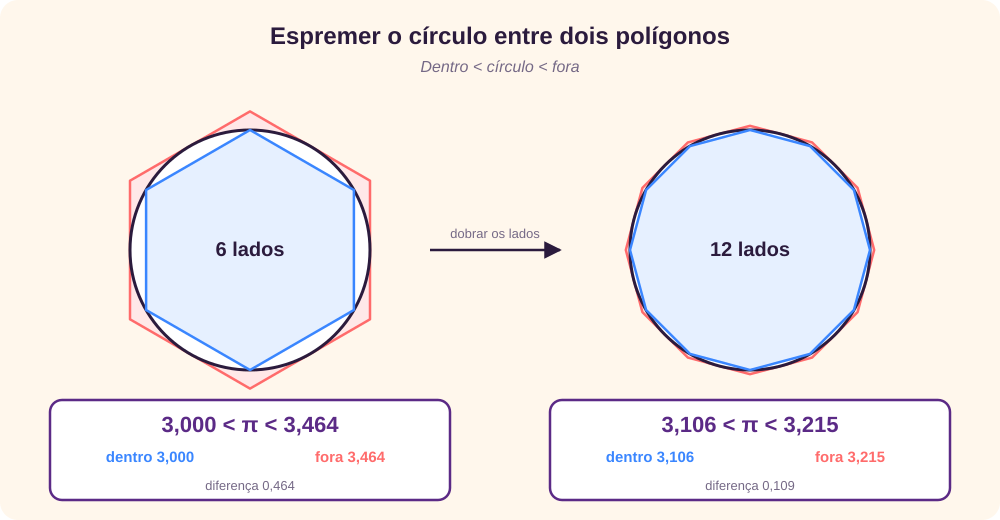
O truque não era desenhar: era calcular. Arquimedes descobriu uma regra para passar do polígono de n lados para o de 2n lados usando só raízes quadradas e frações, e as raízes ele calculava com aproximações como a babilônica. Essa é a primeira vez na história em que alguém dá, ao mesmo tempo, uma aproximação e uma garantia de erro: π está com certeza entre esses dois números.
perímetro de dentro < circunferência < perímetro de fora
(n lados) (n lados)
diâmetro = 1 → 3,1410 < π < 3,1427 (n = 96)
Exemplos de uso
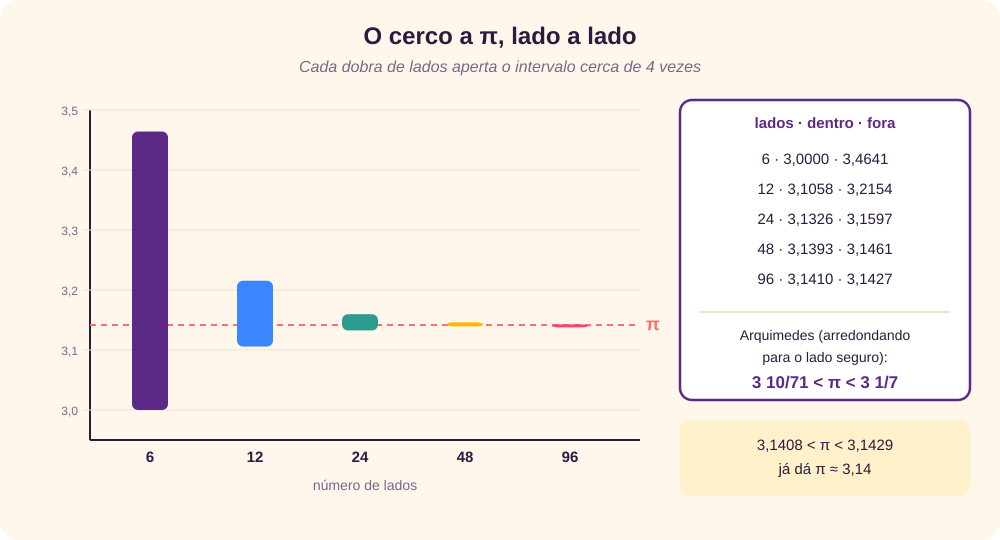
Com 96 lados, Arquimedes chegou a 3 10/71 < π < 3 1/7, ou seja, 3,1408 < π < 3,1429. Ele arredondou sempre “para o lado seguro”, alargando um pouquinho o intervalo, para que a garantia continuasse valendo. A aproximação 22/7 (= 3 1/7) foi usada por engenheiros e artesãos durante quase dois mil anos.
O mesmo espírito vale hoje: quando um computador calcula a área sob uma curva (a integral numérica), ele troca a curva por muitos pedacinhos retos ou retângulos, exatamente como Arquimedes trocou o círculo por polígonos.
3. China: os Nove Capítulos e os sistemas lineares
Quem foram
Os Nove Capítulos da Arte Matemática (Jiuzhang Suanshu) são um livro chinês de 246 problemas práticos, reunidos por vários autores entre os séculos X e I a.C. e fechados por volta do século I d.C. Em 263 d.C., o matemático Liu Hui, do reino de Wei, escreveu comentários que explicam e provam os métodos do livro. [37] [35] Liu Hui também calculou π com polígonos, como Arquimedes, chegando a 3,1416; dois séculos depois, Zu Chongzhi (429–500) mostrou que 3,1415926 < π < 3,1415927.
Não existe retrato autêntico de Liu Hui. A imagem abaixo é uma página de uma edição antiga dos Nove Capítulos; na coluna da direita, lê-se “魏 劉徽 注”: “comentários de Liu Hui, de Wei”.
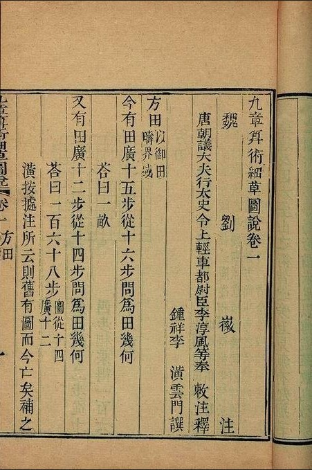
Edição da dinastia Qing · domínio público
O mundo naquela época
| Data | Onde eles viviam | No resto do mundo |
|---|---|---|
| 206 a.C.–220 d.C. | Dinastia Han: burocracia enorme, impostos em grãos, grandes obras de irrigação; a Rota da Seda liga a China ao Ocidente. | Roma passa de república a império (27 a.C.); nasce e se espalha o cristianismo. |
| 220–280 | Período dos Três Reinos; Liu Hui escreve seus comentários em 263, no reino de Wei. | Roma vive a “crise do século III”; na Pérsia, surge o Império Sassânida (224). |
| c. 250 | Contas feitas com varetas numa tábua; números negativos representados por varetas de outra cor. | Nas Américas, começa o período clássico maia, com sua matemática em base 20 e o uso do zero. |
O problema
Um império que cobra impostos em grãos precisa resolver problemas com várias quantidades desconhecidas ao mesmo tempo. O primeiro problema do capítulo 8 é famoso: três tipos de colheita (boa, média e ruim), três combinações de feixes e o total de grãos de cada combinação. Quanto rende um feixe de cada tipo? [37]
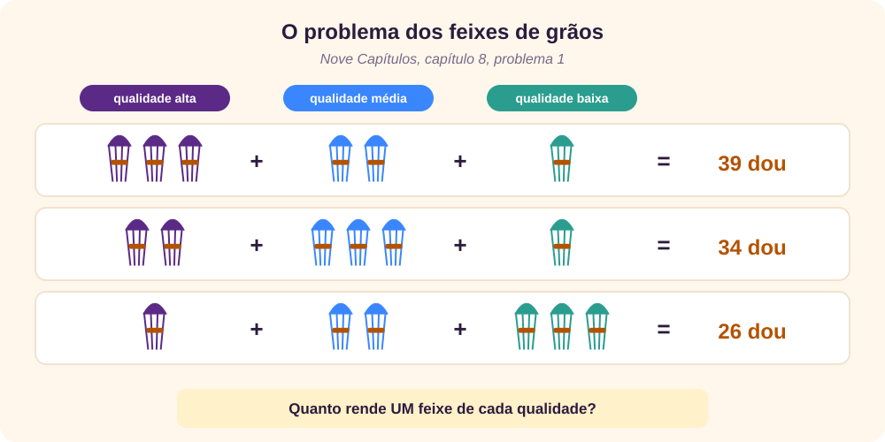
Hoje escreveríamos isso como um sistema linear de três equações:
3a + 2m + 1b = 39 2a + 3m + 1b = 34 1a + 2m + 3b = 26 (a = alta, m = média, b = baixa)
A teoria, passo a passo
O método chinês, chamado fangcheng (“arranjo retangular”), é exatamente o que hoje chamamos de eliminação de Gauss, quase dois mil anos antes de Gauss. A ideia é simples: se você multiplicar uma equação inteira por um número, ou subtrair uma equação de outra, a resposta não muda. Então usamos essas operações para ir zerando números até sobrar uma equação com uma incógnita só.
- Montar a tabela: escreva só os números, uma linha por equação.
- Zerar a primeira coluna: combine as linhas para que a primeira incógnita desapareça das linhas 2 e 3.
- Zerar mais um: combine as linhas 2 e 3 para que a segunda incógnita desapareça da linha 3. A tabela vira uma “escada”.
- Voltar resolvendo: a última linha tem uma incógnita só. Resolva, suba para a linha de cima, e assim por diante.
![Quatro etapas da eliminação. Etapa 1: montar a tabela com os números 3, 2, 1 e 39; 2, 3, 1 e 34; 1, 2, 3 e 26. Etapa 2: multiplicar a linha 2 por 3 e tirar duas vezes a linha 1, e multiplicar a linha 3 por 3 e tirar a linha 1, zerando a primeira coluna: as linhas viram 0, 5, 1 e 24 e 0, 4, 8 e 39. Etapa 3: multiplicar a linha 3 por 5 e tirar 4 vezes a linha 2: 0, 0, 36 e 99. Etapa 4: voltar resolvendo, de baixo para cima: baixa = 99 dividido por 36 = 2,75; média = (24 − 2,75) dividido por 5 = 4,25; alta = (39 − 2 × 4,25 − 2,75) dividido por 3 = 9,25.](rc_images/CalcNumChinaTeoria.svg)
Um detalhe notável: para fazer essas subtrações, às vezes aparecem números negativos. Os Nove Capítulos estão entre os primeiros textos do mundo a dar regras para somar e subtrair números negativos, representados por varetas pretas, enquanto os positivos eram vermelhos. [37]
Exemplos de uso
![À esquerda, um problema de lanchonete: pastel mais suco mais coxinha custam 18 reais; 2 pastéis e 1 coxinha, 20 reais; 1 suco e 2 coxinhas, 17 reais. Eliminando passo a passo, pastel = 7, suco = 5 e coxinha = 6 reais. À direita, onde sistemas lineares aparecem hoje, com o tamanho típico: circuitos elétricos, dezenas a milhões de incógnitas; estruturas de pontes e prédios, milhões; jogos 3D e animação, milhares por quadro; previsão do tempo, bilhões; inteligência artificial, bilhões de números por segundo.](rc_images/CalcNumChinaExemplo.svg)
Sistemas lineares estão entre os problemas que os computadores mais resolvem no mundo. Quando um engenheiro calcula se uma ponte aguenta o peso, ele divide a estrutura em milhões de pedacinhos e escreve uma equação para cada um. Quando um jogo 3D calcula luz e sombra, ou quando uma inteligência artificial é treinada, bilhões de contas desse tipo acontecem por segundo. O ranking dos supercomputadores mais rápidos do mundo, o TOP500, mede justamente quão depressa cada máquina resolve um sistema linear gigante. [47]
4. Índia: o zero, os senos e as séries infinitas
Quem foram
A Índia deu ao Cálculo Numérico a sua ferramenta mais básica: o sistema decimal posicional com zero, em que o valor de um algarismo depende da posição (o 3 de 300 vale cem vezes o 3 de 3). Sem ele, as contas longas deste artigo seriam quase impossíveis. Um dos registros mais antigos do zero como símbolo está no manuscrito Bakhshali, um texto de matemática em casca de bétula encontrado em 1881 no atual Paquistão; algumas folhas foram datadas por carbono-14 entre os séculos III e IV, mas a data do conteúdo ainda é debatida. [4] O manuscrito traz até uma fórmula para raízes quadradas equivalente a dois passos do método babilônico. [39]
Aryabhata (476–550) escreveu em 499, aos 23 anos, o Aryabhatiya, um livro de astronomia em versos que traz uma tabela de senos e o valor π ≈ 3,1416. [30] Brahmagupta (598–c. 668) deu as primeiras regras completas para contas com zero e números negativos (628) e, em 665, uma fórmula de interpolação de segunda ordem. [31] E Madhava de Sangamagrama (c. 1340–1425), fundador da escola de Kerala, no sul da Índia, descobriu séries infinitas para o seno, o cosseno e o π cerca de 250 anos antes de Newton, Gregory e Leibniz. Os livros de Madhava se perderam; conhecemos suas ideias pelos alunos, como Nilakantha (Tantrasangraha, 1501) e Jyeshthadeva (Yuktibhasa, c. 1530, escrito em malaiala). [36] [41]
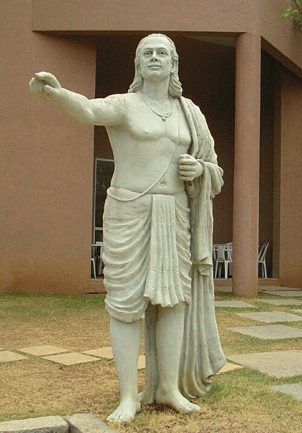
Estátua no IUCAA, Pune (não há retrato autêntico) · domínio público
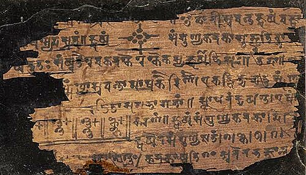
Biblioteca Bodleiana, Oxford · domínio público
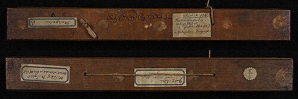
Expõe as séries de Madhava · domínio público
O mundo naquela época
| Data | Onde eles viviam | No resto do mundo |
|---|---|---|
| 499 | Fim da “era de ouro” do Império Gupta; Aryabhata escreve em Kusumapura, perto da atual Patna. | O Império Romano do Ocidente caiu em 476; na China, Zu Chongzhi morre em 500. |
| 628–665 | Brahmagupta trabalha em Bhillamala, no atual Rajastão; por volta de 773, textos astronômicos indianos chegam a Bagdá e são traduzidos para o árabe. | Surge o Islã (a Hégira é em 622); na China, começa a dinastia Tang (618). |
| c. 1340–1530 | A escola de Kerala floresce numa costa rica em especiarias, com Madhava, Nilakantha e Jyeshthadeva. | Vasco da Gama chega a Calicute, em Kerala, em 1498; a frota de Cabral, que chegou ao Brasil em 1500, seguia justamente para Calicute. |
O problema
A astronomia indiana, usada para calendários, festivais e previsão de eclipses, dependia de tabelas de senos. Aryabhata dividiu um quarto de círculo em 24 arcos de 3°45’ e precisava do “seno” de cada um, a meia-corda que os indianos chamavam de jyā, “corda de arco”. Curiosidade: jyā virou jība em árabe, foi mal lida como jaib (“dobra”) e traduzida para o latim como sinus, que deu “seno”. Além dos 24 valores, os astrônomos precisavam dos senos entre eles, e de um π preciso.
![À esquerda, um quarto de círculo de raio 3438 dividido em 24 arcos iguais de 3°45’, ou 225 minutos de arco, com as meias-cordas verticais de cada ponto: são os senos indianos, chamados jyā, “corda de arco”. É preciso calcular os 24 valores e também os que ficam entre eles. À direita, dois cartões. Por que raio 3438? Porque o círculo tem 21.600 minutos de arco e 21.600 dividido por 2π dá cerca de 3438; assim, um arco pequeno e o seu seno quase coincidem. E o π de Aryabhata, no ano 499: 62.832 dividido por 20.000, igual a 3,1416, que ele chama de “aproximado”.](rc_images/CalcNumIndiaProblema.svg)
Um detalhe esperto: Aryabhata usou um círculo de raio 3438. Como a volta inteira tem 21.600 minutos de arco e 21.600 ÷ 2π ≈ 3438, nesse círculo um arco pequeno e o seu seno medem quase o mesmo número. E, ao dar π ≈ 62.832 ÷ 20.000 = 3,1416, Aryabhata escreveu que o valor era āsanna, “aproximado”: ele sabia que não era exato. [30]
A teoria, passo a passo
1. Construir a tabela somando diferenças. Em vez de calcular cada seno do zero, Aryabhata calculou as diferenças entre senos vizinhos. A primeira é 225. As outras vão encolhendo, e a regra diz quanto: cada diferença nova é a anterior menos um pedacinho proporcional à soma dos senos já obtidos. Quanto maior o seno, mais a curva “entorta”, e mais a diferença diminui.
diferença nova = diferença anterior − (soma dos senos até aqui) ÷ 233,5 225 225 − 225 ÷ 233,5 ≈ 224 → seno 2 = 225 + 224 = 449 224 − 449 ÷ 233,5 ≈ 222 → seno 3 = 449 + 222 = 671
No texto de Aryabhata o divisor é 225; com o divisor exato, cerca de 233,5, a regra reproduz a tabela quase perfeitamente. Em linguagem moderna, ele usou o fato de que a diferença das diferenças do seno é proporcional ao próprio seno. É a mesma ideia de diferenças finitas que Richardson aplicaria à previsão do tempo 1.400 anos depois. [39]
![À esquerda, um gráfico de barras com as 24 diferenças da tabela de Aryabhata, de 225 até 7: cada seno é o anterior mais uma diferença, e as diferenças vão encolhendo. À direita, a regra: diferença nova = diferença anterior − (soma dos senos até aqui) ÷ 233,5. Aryabhata usa o divisor 225; com o divisor exato, cerca de 233,5, a regra reproduz quase perfeitamente a tabela. Primeiros passos: 225; 225 − 225 ÷ 233,5 ≈ 224; 224 − 449 ÷ 233,5 ≈ 222; 222 − 671 ÷ 233,5 ≈ 219. Embaixo: é a ideia das diferenças finitas, a mesma que Richardson usaria em 1922, com 1.400 anos de antecedência.](rc_images/CalcNumIndiaTeoria.svg)
2. Interpolar com curvatura. Para achar um seno entre dois valores da tabela, o mais simples é ligar os pontos com uma reta (interpolação linear). Brahmagupta, em 665, fez melhor: usou também a diferença anterior para medir quanto a curva entorta e corrigir a reta. É uma interpolação de segunda ordem, cerca de mil anos antes das fórmulas de Newton e Stirling. [31]
seno(x₀ + t·h) ≈ seno(x₀) + t × (D₋ + D₊) ÷ 2 + t² × (D₊ − D₋) ÷ 2 D₋ = diferença anterior, D₊ = diferença seguinte, t = fração do passo (0 a 1)
3. Séries infinitas com correção. Madhava descobriu que π pode ser escrito como uma soma sem fim: π/4 = 1 − 1/3 + 1/5 − 1/7 + … O problema é que essa soma chega em π muito devagar: com 10 termos, ainda dá 3,04. A grande sacada de Madhava foi estimar o pedaço que falta quando se para no meio, e somá-lo como um termo de correção. Isso é, literalmente, uma estimativa do erro de truncamento, uma das ideias centrais do Cálculo Numérico. [41]
![À esquerda, um gráfico das somas parciais da série 4 × (1 − 1/3 + 1/5 − 1/7 + …) para 1 a 10 termos: elas pulam acima e abaixo de π e chegam devagar, ainda com 3,04 depois de 10 termos. A linha corrigida, somando o termo de correção de Madhava, n ÷ (4n² + 1), já fica praticamente em cima de π desde o terceiro termo: 3,1414 com 4 termos e 3,1415902 com 10. À direita, a série rápida de Madhava, π = √12 × (1 − 1/(3·3) + 1/(5·3²) − 1/(7·3³) + …), com a qual ele obteve π com 11 casas decimais: 3,14159265359.](rc_images/CalcNumIndiaMadhava.svg)
Exemplos de uso
![À esquerda, uma tabela com alguns senos de Aryabhata, somando as diferenças, comparados com o valor moderno 3438 vezes o seno: 3°45’, 225 e 225; 7°30’, 449 e 449; 15°, 890 e 890; 30°, 1719 e 1719; 45°, 2431 e 2431; 60°, 2978 e 2977; 78°45’, 3372 e 3372; 90°, 3438 e 3438. À direita, a interpolação de segunda ordem de Brahmagupta, do ano 665, para achar o seno de 80°, que fica entre 78°45’ e 82°30’. Ligando os pontos com uma reta, dá 3384,3, com erro de 1,4. A fórmula de Brahmagupta, que também usa a diferença anterior para levar em conta a curvatura, dá 3385,9, com erro de apenas 0,1. O valor real é 3385,8.](rc_images/CalcNumIndiaExemplo.svg)
Somando as diferenças, os 24 senos de Aryabhata batem com os valores modernos (3438 × seno) quase sem erro: só uma entrada difere em uma unidade. E, para achar o seno de 80°, que fica entre 78°45’ e 82°30’, a reta entre os vizinhos erra por 1,4; a fórmula de Brahmagupta erra por apenas 0,1.
Com a correção de Madhava, a série de π com só 10 termos passa de 3,04 para 3,1415902. E com uma série mais rápida, π = √12 × (1 − 1/(3·3) + 1/(5·3²) − …), Madhava obteve π com 11 casas decimais: 3,14159265359. [36]
Essas ideias continuam vivas. As tabelas de funções construídas por diferenças foram usadas até a era dos computadores; a máquina diferencial de Charles Babbage (1822) foi projetada exatamente para isso. A interpolação está em qualquer programa que “preenche” valores entre medições, como os gráficos de temperatura de um aplicativo de clima. E as séries com correção de erro são a base de como calculadoras e computadores calculam seno, cosseno e logaritmo. O caminho também passou pelo mundo islâmico: os algarismos indianos e a astronomia indiana chegaram a Bagdá no século VIII, onde al-Khwarizmi os estudou, como veremos a seguir.
5. Mundo islâmico: o algoritmo e a iteração
Quem foram
Muhammad ibn Musa al-Khwarizmi (c. 780–850) trabalhou na Casa da Sabedoria, em Bagdá, um centro de pesquisa e tradução criado pelos califas abássidas. Por volta de 820, escreveu o livro que deu nome à álgebra (de al-jabr, “restaurar”) e outro que ensinava a calcular com os algarismos indianos, incluindo o zero. Quando esse segundo livro foi traduzido para o latim, no século XII, começava com “Algoritmi dixit” (“assim disse al-Khwarizmi”). Do nome dele veio a palavra algoritmo. [28]
Jamshid al-Kashi (c. 1380–1429) foi o grande calculista do observatório de Samarcanda, no atual Uzbequistão, fundado pelo sultão e astrônomo Ulugh Beg. Em 1424, calculou π com 16 casas decimais, um recorde que durou cerca de 180 anos. Em 1427, terminou A chave da aritmética, um manual de cálculo com frações decimais. [27]
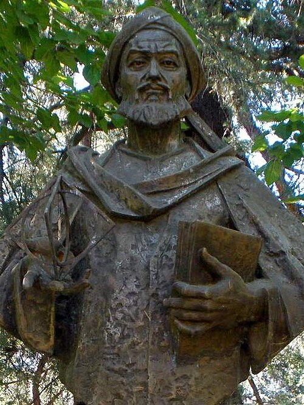
Monumento em Madri; foto: Zarateman · CC0
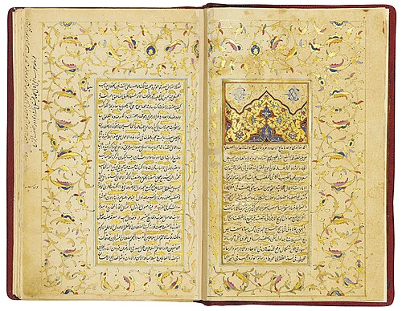
A chave da aritmética, cópia de 1656 · domínio público
O mundo naquela época
| Data | Onde eles viviam | No resto do mundo |
|---|---|---|
| 762 | O califa al-Mansur funda Bagdá, que vira uma das maiores cidades do mundo; após 751, a técnica chinesa do papel chega ao mundo islâmico. | Na China, dinastia Tang; na Europa, Carlos Magno é coroado imperador em 800. |
| 813–833 | O califa al-Ma’mun apoia a Casa da Sabedoria: livros gregos, persas e indianos são traduzidos para o árabe. | Os vikings atacam o litoral da Europa desde 793. |
| 1405–1433 | Samarcanda é a capital cultural do Império Timúrida; Ulugh Beg constrói sua escola (1417–1420) e o observatório. | O almirante chinês Zheng He faz sete grandes viagens; Portugal conquista Ceuta (1415) e inicia as navegações que chegariam ao Brasil em 1500. |
O problema
A astronomia islâmica precisava de tabelas de senos muito precisas: para prever eclipses, montar calendários lunares, marcar os horários de oração e achar a direção de Meca. A tabela começa pelo seno de 1°, e aí estava o nó. Com geometria, é possível calcular exatamente o seno de 3°. Mas, para passar de 3° para 1°, seria preciso dividir um ângulo em três partes iguais, e isso é impossível com régua e compasso (os gregos já desconfiavam; a prova veio em 1837).

A teoria, passo a passo
Al-Kashi usou uma identidade da trigonometria: sen 3θ = 3 sen θ − 4 sen³ θ. Com θ = 1° e chamando x = sen 1°, ela vira uma equação de terceiro grau: sen 3° = 3x − 4x³. Em vez de procurar uma fórmula, ele fez algo muito moderno: reescreveu a equação na forma x = g(x) e repetiu a conta.
sen 3° = 3x − 4x³
3x = sen 3° + 4x³
x = (sen 3° + 4x³) ÷ 3 ← forma x = g(x)
chute → aplique g → novo chute → aplique g → …
Isso se chama iteração de ponto fixo. Um “ponto fixo” é um número que, colocado dentro de g, sai igual: x = g(x). No gráfico, é onde a curva de g cruza a reta y = x. Começando de um chute e aplicando g várias vezes, os valores formam uma escadinha que desce até esse ponto. Funciona quando g “encolhe as distâncias”; no caso de al-Kashi, o termo 4x³ é minúsculo (x é perto de 0,017), então cada volta muda muito pouco e o processo converge depressa.
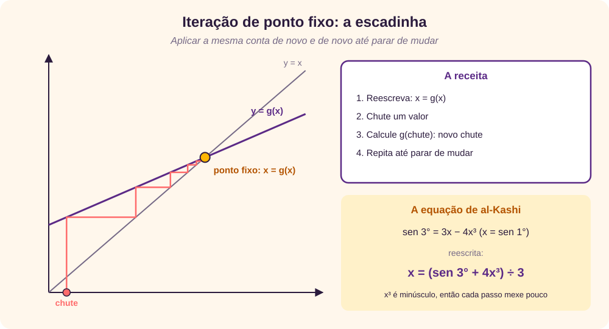
Exemplos de uso
Começando com sen 3° ÷ 3, cada volta acrescenta de 3 a 4 casas certas. Em poucas voltas, al-Kashi tinha o seno de 1° com mais precisão do que qualquer tabela anterior. E, para o π, usou polígonos como Arquimedes, mas com 805.306.368 lados, obtendo 3,1415926535897932. [27]
A iteração de ponto fixo está hoje em toda parte: o algoritmo PageRank, que o Google usou para ordenar páginas, é uma iteração desse tipo; programas de engenharia a usam para resolver equações não lineares; e muitos métodos de inteligência artificial são, no fundo, “repita até parar de mudar”.
6. Newton e Raphson: raízes de equações
Quem foram
Isaac Newton (1643–1727) criou, entre outras coisas, as leis do movimento, a lei da gravitação e (ao mesmo tempo que Leibniz) o cálculo diferencial e integral. Num manuscrito de 1669, De analysi, mostrou como achar raízes de equações com uma sequência de correções, usando o exemplo x³ − 2x − 5 = 0. Joseph Raphson (c. 1648–1715), membro da Royal Society, publicou em 1690 uma versão mais simples e geral do método. Por isso ele se chama hoje método de Newton-Raphson. A forma com derivadas que usamos hoje foi escrita por Thomas Simpson em 1740. [54]
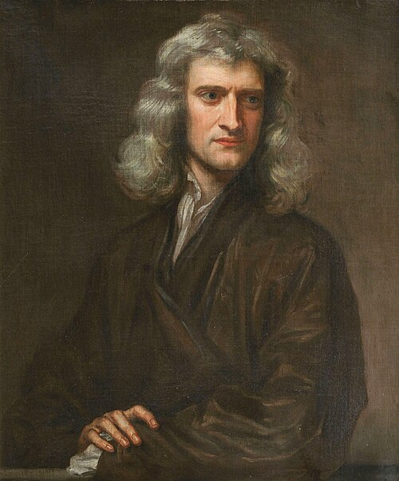
Godfrey Kneller, 1689 · domínio público
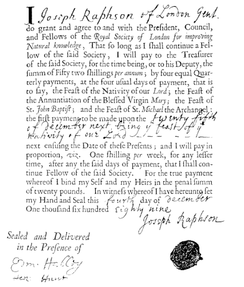
Termo de admissão na Royal Society, 1689 · domínio público
Não se conhece nenhum retrato de Raphson; o documento acima, com a assinatura dele, é um dos poucos registros de sua vida. Quem assina como testemunha é Edmond Halley, o do cometa.
O mundo naquela época
| Data | Onde eles viviam | No resto do mundo |
|---|---|---|
| 1665–1666 | A peste fecha a Universidade de Cambridge; Newton volta para a fazenda da família e tem suas grandes ideias. Em 1666, o Grande Incêndio de Londres. | Na França, reinado de Luís XIV; no Japão, período Edo. |
| 1687–1690 | Newton publica os Principia (1687); a Revolução Gloriosa muda a monarquia inglesa (1688); Raphson publica seu método (1690). | No Brasil, o Quilombo dos Palmares resiste até 1694–1695; em 1693–1695, bandeirantes encontram ouro em Minas Gerais. |
| 1714 | O Parlamento britânico oferece um prêmio para quem medir a longitude no mar. | A navegação oceânica depende cada vez mais de tabelas astronômicas calculadas à mão. |
O problema
Kepler tinha descoberto que os planetas giram em elipses e que varrem áreas iguais em tempos iguais. Mas, para saber onde um planeta está numa data, é preciso resolver a equação de Kepler: M = E − e · sen E. O M vem do tempo, o e diz quão achatada é a órbita e o E dá a posição. Não existe fórmula que isole o E. É um problema de achar a raiz de uma equação: o valor que faz f(E) = E − e · sen E − M dar zero. Navegadores, astrônomos e construtores de calendários precisavam fazer isso o tempo todo.
![À esquerda, a órbita elíptica de um planeta com o Sol num dos focos e o planeta num ponto da elipse. Kepler descobriu que o planeta varre áreas iguais em tempos iguais. Para saber onde ele está numa data, é preciso resolver a equação de Kepler, M = E − e · sen E, em que M vem do tempo, e é o achatamento da órbita e E dá a posição. Não existe fórmula que isole E. À direita, o gráfico da função f(E) = E − e · sen E − M cruzando o zero num ponto marcado com interrogação: achar a raiz é achar o planeta.](rc_images/CalcNumNewtonProblema.svg)
A teoria, passo a passo
A ideia de Newton é trocar a curva difícil por uma reta fácil. Visto de muito perto, qualquer curva lisa parece uma reta, a reta tangente. E achar onde uma reta corta o zero é fácil: é só uma divisão.
- Escolha um chute x₀ perto da raiz.
- Calcule a altura da curva nesse ponto, f(x₀), e a inclinação dela, f’(x₀) (a derivada).
- Siga a reta tangente até ela tocar o eixo horizontal. Esse é o novo chute, x₁.
- Repita a partir de x₁.
x novo = x − f(x) ÷ f’(x) altura ÷ inclinação = quanto andar na horizontal até o zero
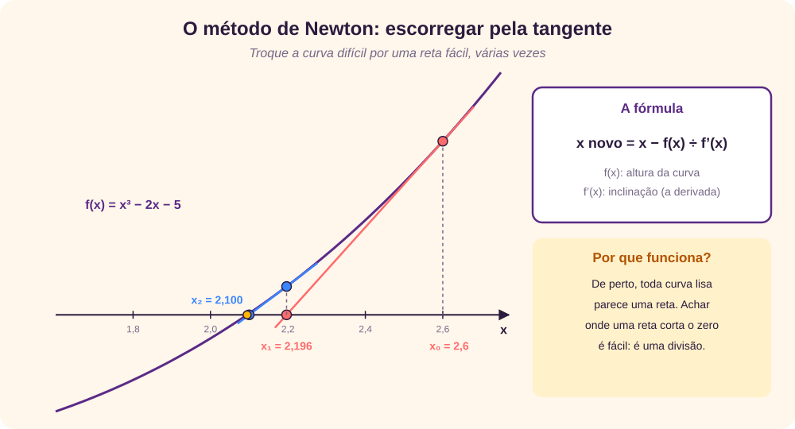
Exemplos de uso
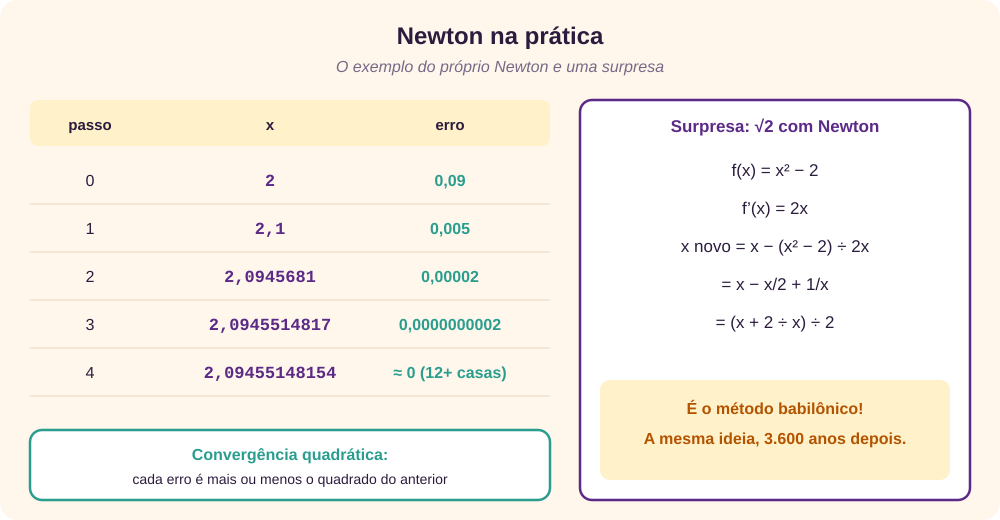
Começando em x = 2, o método acha a raiz 2,0945514815… em quatro passos. Veja a coluna de erros: 0,09, depois 0,005, depois 0,00002, depois 0,0000000002. Cada erro é mais ou menos o quadrado do anterior. É a mesma convergência quadrática do método babilônico, e não por acaso: aplicando Newton à equação x² − 2 = 0, a fórmula vira (x + 2 ÷ x) ÷ 2, exatamente a receita da tabuleta de 3.600 anos antes.
Hoje, o método de Newton roda dentro do GPS (para achar sua posição a partir dos sinais dos satélites), de programas de engenharia, de calculadoras financeiras (para achar a taxa de juros de um financiamento) e do treinamento de alguns modelos de inteligência artificial. Na mesma época, Newton também criou fórmulas de interpolação, para “ligar os pontos” de uma tabela e estimar valores intermediários, ideia aperfeiçoada por Lagrange em 1795.
7. Euler, Runge e Kutta: prevendo o futuro passo a passo
Quem foram
Leonhard Euler (1707–1783), nascido na Basileia, na Suíça, foi o matemático mais produtivo da história: seus trabalhos completos ocupam mais de 80 volumes. Trabalhou nas academias de São Petersburgo e de Berlim e continuou produzindo mesmo depois de ficar quase cego. No livro Institutionum calculi integralis (1768), descreveu o método mais simples para resolver equações diferenciais, que hoje leva seu nome. [12]
Mais de um século depois, os alemães Carl Runge (1856–1927), em 1895, e Martin Wilhelm Kutta (1867–1944), em 1901, criaram métodos muito mais precisos, conhecidos como Runge-Kutta. Kutta também é famoso na aerodinâmica, pelo cálculo da força que sustenta as asas de um avião. [5] [34]
Jakob Emanuel Handmann, 1753 · domínio público
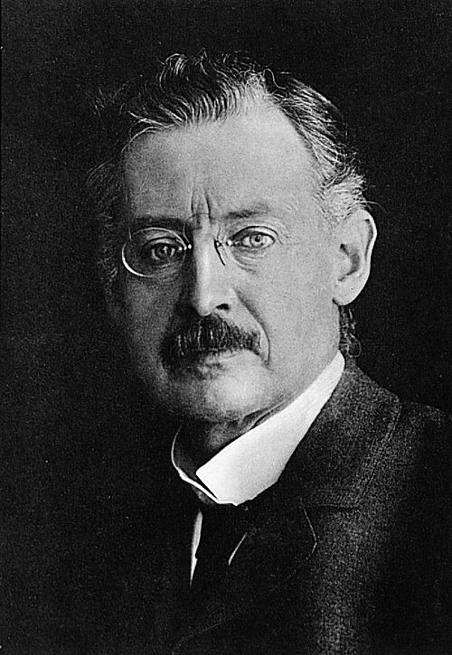
Foto · domínio público
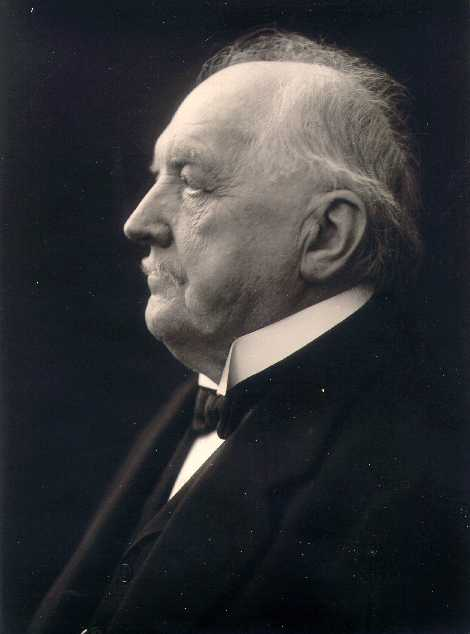
Foto de c. 1925 · domínio público
O mundo naquela época
| Data | Onde eles viviam | No resto do mundo |
|---|---|---|
| 1741–1766 | Euler trabalha em Berlim, a convite de Frederico, o Grande; é a época do Iluminismo e da Enciclopédia francesa. | Em 1755, um terremoto destrói Lisboa; em 1763, a capital do Brasil passa de Salvador para o Rio de Janeiro. |
| 1766–1783 | Euler volta a São Petersburgo, sob Catarina, a Grande. | James Watt patenteia sua máquina a vapor (1769); os Estados Unidos declaram independência (1776). |
| 1871–1901 | A Alemanha se unifica (1871) e vira potência industrial e científica: eletricidade, química, motores. | No Brasil, abolição da escravatura (1888) e Proclamação da República (1889); em 1906, Santos-Dumont voa com o 14-Bis em Paris. |
O problema
Muitas leis da natureza não dizem onde as coisas estão, mas como elas mudam. Um café quente esfria mais depressa quanto mais quente está. Uma bala de canhão muda de velocidade por causa da gravidade e da resistência do ar. Uma população cresce proporcionalmente ao número de habitantes. Essas regras são equações diferenciais. Resolvê-las é descobrir o caminho inteiro a partir da regra de mudança. O problema: quase nenhuma equação diferencial real tem fórmula pronta.
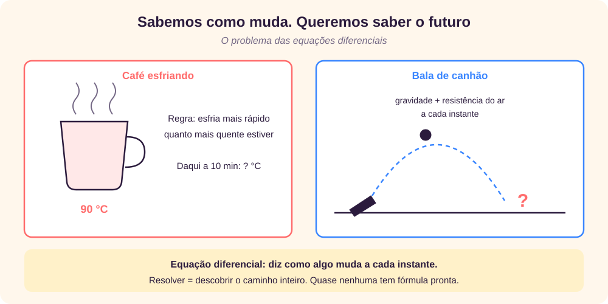
A teoria, passo a passo
A ideia de Euler é a mais natural possível: se você sabe para onde está indo agora, dê um passinho nessa direção e olhe de novo.
- Comece no ponto conhecido (por exemplo, a temperatura do café agora).
- Use a regra para calcular a inclinação, isto é, quão depressa a coisa está mudando neste instante.
- Ande um passo de tamanho h seguindo essa inclinação.
- No novo ponto, calcule a nova inclinação e repita.
y novo = y + h × inclinação Exemplo: y’ = y (a inclinação é igual ao próprio valor) y(0) = 1, h = 0,25: 1 → 1 + 0,25 × 1 = 1,25 → 1,25 + 0,25 × 1,25 = 1,5625 → …
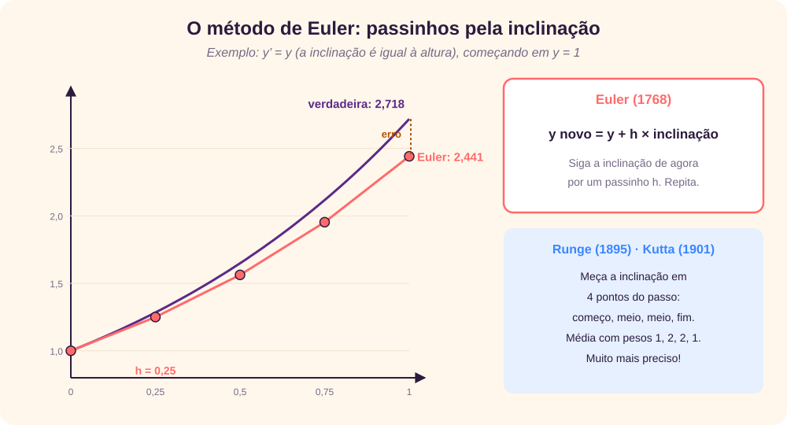
O problema do método de Euler é que ele usa a inclinação do começo do passo durante o passo inteiro, e a curva vai se afastando. Passos menores ajudam, mas custam mais contas. A ideia de Runge e Kutta foi “espiar” a inclinação em vários pontos dentro do passo (no começo, duas vezes no meio e no fim) e fazer uma média ponderada. O método clássico de quarta ordem, o RK4, usa pesos 1, 2, 2 e 1. [5]
Exemplos de uso
A equação y’ = y, começando em y = 1, tem como resposta em x = 1 o famoso número e = 2,71828… Com 4 passos, Euler erra 10%; com 100 passos, ainda erra 0,5%. O RK4, com os mesmos 4 passos, erra só 0,003%. Por isso métodos do tipo Runge-Kutta são o “arroz com feijão” da simulação: estão nos motores de física dos videogames, nos programas que calculam órbitas de satélites e trajetórias de foguetes, em simulações de epidemias e em modelos de circuitos elétricos.
8. Gauss: mínimos quadrados e o planeta perdido
Quem foi
Carl Friedrich Gauss (1777–1855), filho de uma família pobre de Brunswick, na Alemanha, é chamado de “príncipe dos matemáticos”. Aos 24 anos, publicou um livro que reformulou a teoria dos números e, no mesmo ano, ficou famoso em toda a Europa por reencontrar um planeta anão perdido. Foi diretor do observatório de Göttingen por quase 50 anos e trabalhou também em magnetismo, geodésia (a medição da Terra) e no telégrafo. [32]
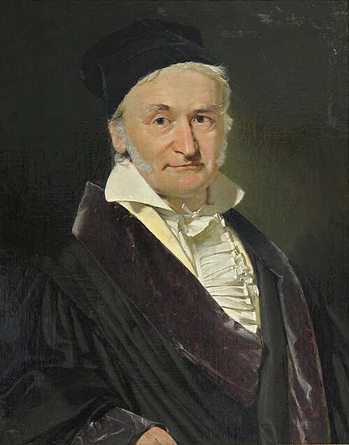
Christian Albrecht Jensen, 1840 · domínio público
O mundo naquela época
| Data | Onde ele vivia | No resto do mundo |
|---|---|---|
| 1801 | Gauss, que estudou com uma bolsa do duque de Brunswick, publica as Disquisitiones Arithmeticae. | Napoleão domina a Europa; a Revolução Industrial avança na Inglaterra. |
| 1806–1809 | O duque de Brunswick, protetor de Gauss, morre após a batalha de Jena contra Napoleão (1806); Gauss publica a Theoria motus (1809). | Fugindo de Napoleão, a corte portuguesa chega ao Brasil em 1808; os portos brasileiros são abertos. |
| 1818–1832 | Gauss comanda a medição geodésica do Reino de Hanôver. | Independência do Brasil em 1822. |
O problema
Em 1º de janeiro de 1801, o astrônomo Giuseppe Piazzi, em Palermo, descobriu um pequeno astro, hoje chamado Ceres. Ele o acompanhou por cerca de seis semanas, até que Ceres sumiu no brilho do Sol. Com tão poucas observações, de um pedacinho só da órbita, e com erros de medida, ninguém sabia onde procurá-lo quando voltasse a aparecer. Gauss calculou a órbita que melhor se ajustava aos dados e, em 31 de dezembro de 1801, Ceres foi reencontrado quase exatamente no lugar previsto. [32]
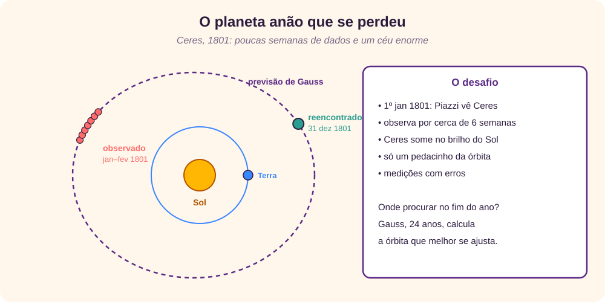
A teoria, passo a passo
Toda medição tem erro. Quando temos mais medições do que incógnitas, nenhuma curva passa exatamente por todos os pontos. Qual é, então, a “melhor”? A resposta de Gauss (e, de forma independente, de Adrien-Marie Legendre, que a publicou primeiro, em 1805) é o método dos mínimos quadrados: escolha a curva que torna a soma dos quadrados dos erros a menor possível. [44]
- Para cada ponto, meça a distância vertical até a reta: esse é o erro, ou resíduo.
- Eleve cada erro ao quadrado (assim, erros para cima e para baixo não se cancelam, e erros grandes pesam mais).
- Some tudo. A melhor reta é a que deixa essa soma mínima.
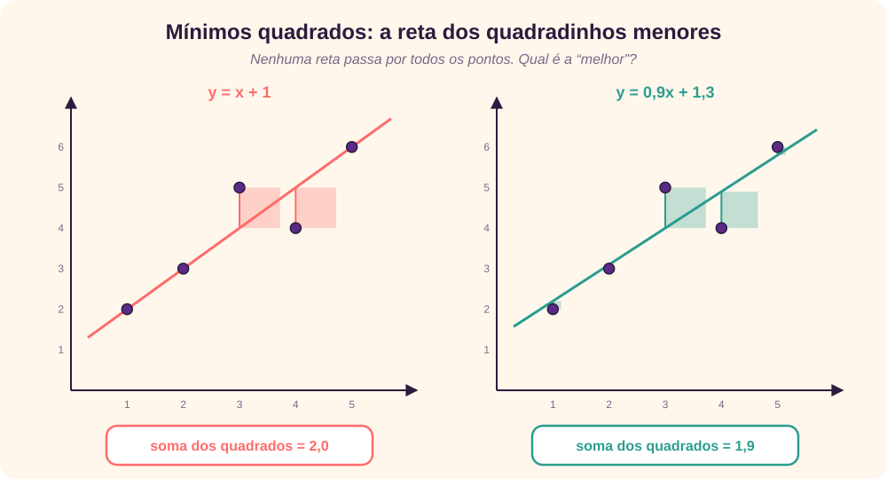
Por que quadrados? Gauss mostrou que, se os erros de medida seguem a famosa curva em forma de sino (a distribuição normal, também chamada de gaussiana), a reta de mínimos quadrados é a mais provável. E, de quebra, a conta tem solução por fórmula, que cai num sistema linear resolvido por eliminação, a mesma dos Nove Capítulos.
Exemplos de uso
inclinação = Σ (x − x̄)(y − ȳ) ÷ Σ (x − x̄)² = 9 ÷ 10 = 0,9 intercepto = ȳ − inclinação × x̄ = 4 − 0,9 × 3 = 1,3 altura ≈ 0,9 × semana + 1,3 → semana 6: 6,7 cm
Gauss usou os mínimos quadrados para medir o Reino de Hanôver com triângulos gigantes, entre 1818 e 1832. Hoje, o método está no GPS (que combina sinais de vários satélites com erro), na estatística (a “regressão linear”), na economia, na calibração de instrumentos e no aprendizado de máquina: treinar muitas redes neurais é, no fundo, minimizar uma soma de quadrados de erros. Gauss também criou, em 1814, uma forma muito eficiente de calcular integrais, a quadratura gaussiana, e um método iterativo para sistemas lineares, depois chamado de Gauss-Seidel.
9. Richardson: a previsão do tempo feita à mão
Quem foi
Lewis Fry Richardson (1881–1953) foi um físico e meteorologista inglês, quaker e pacifista. Durante a Primeira Guerra Mundial, trabalhou como motorista de ambulância na França e, nos intervalos, fez à mão o primeiro cálculo de previsão do tempo baseado nas leis da física. Publicou tudo no livro Weather Prediction by Numerical Process (1922). Mais tarde, estudou matematicamente as causas das guerras e descobriu que o comprimento de um litoral depende da régua usada para medi-lo, ideia que inspiraria os fractais. [38] [24]
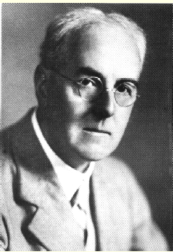
Foto: NOAA · domínio público
O mundo naquela época
| Data | Onde ele vivia | No resto do mundo |
|---|---|---|
| 1914–1918 | Primeira Guerra Mundial; Richardson serve numa unidade de ambulâncias quaker na França (1916–1919). | Revolução Russa (1917); a gripe espanhola mata dezenas de milhões (1918–1920). |
| 1922 | Publica o livro com o cálculo e o sonho da “fábrica de previsões”. | No Brasil, Semana de Arte Moderna e centenário da Independência. |
| 1928 | Na Alemanha, Courant, Friedrichs e Lewy descobrem a regra de estabilidade das diferenças finitas. | Alexander Fleming descobre a penicilina; um ano depois, a crise de 1929. |
O problema
No começo do século XX, a previsão do tempo era feita comparando mapas do dia com mapas antigos parecidos. Richardson quis fazer diferente: medir o estado do ar agora (pressão, vento, temperatura, umidade) e usar as equações da física para calcular o ar daqui a algumas horas. Ele dividiu a Europa Central numa grade de quadrados, como um tabuleiro de xadrez, e fez as contas para prever 6 horas à frente. Levou cerca de seis semanas. E o resultado foi um fracasso: previu uma variação de pressão de 145 hectopascais, quando a real foi quase nula. [24]
![À esquerda, um mapa esquemático da Europa Central coberto por uma grade de quadrados alternados, como o tabuleiro de xadrez que Richardson usou: em alguns quadrados calcula-se a pressão, nos outros o vento. À direita, o plano: medir o ar agora, aplicar as leis da física em cada quadrado e calcular como ele estará daqui a 6 horas. Richardson fez isso à mão em cerca de seis semanas e previu uma variação de pressão de 145 hectopascais em 6 horas, quando a real foi quase nula. Ele sonhou com uma fábrica de previsões com 64 mil calculistas humanos.](rc_images/CalcNumRichardsonProblema.svg)
Mesmo assim, Richardson imaginou o futuro: uma “fábrica de previsões”, um grande teatro com 64 mil calculistas humanos, cada um responsável por um pedaço do mapa, coordenados por um maestro. Era a descrição de um supercomputador paralelo, décadas antes de ele existir. Anos depois, descobriu-se que o erro vinha dos dados iniciais, que tinham “ruído” demais; quando o cálculo foi refeito com dados suavizados, a previsão ficou razoável. [24]
A teoria, passo a passo
As leis da física falam em derivadas: quão depressa a pressão muda de um lugar para outro, quão depressa a temperatura muda com o tempo. Um computador (humano ou eletrônico) não sabe fazer derivadas; sabe fazer contas. A solução são as diferenças finitas: trocar a derivada por uma diferença entre pontos vizinhos da grade.
derivada: f’(x) ≈ (f(x + h) − f(x)) ÷ h curvatura: f”(x) ≈ (f(x − h) − 2 f(x) + f(x + h)) ÷ h² Regra do calor numa grade: T novo = T + r × (T esquerda − 2 T + T direita)
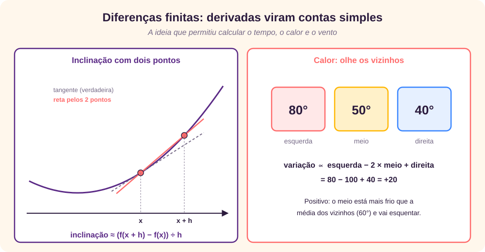
Há uma armadilha, descoberta em 1928 por Richard Courant, Kurt Friedrichs e Hans Lewy: se o passo no tempo for grande demais em relação ao tamanho dos quadradinhos, os erros crescem a cada passo e a simulação “explode”. Essa é a condição CFL, e ela vale até hoje em qualquer simulação de clima, som, ondas ou explosões. [8]
Exemplos de uso
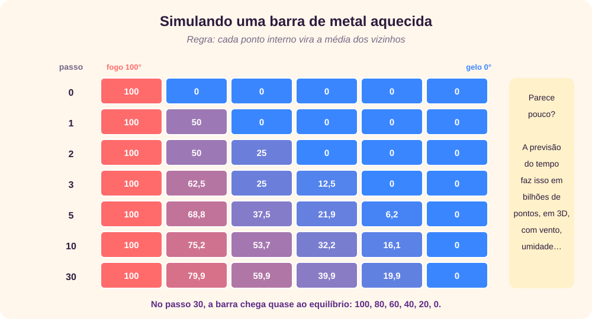
No exemplo, a ponta esquerda de uma barra fica no fogo (100°) e a direita no gelo (0°). A cada passo, cada ponto interno vira a média dos vizinhos (é a regra do calor com r = 0,5). Em 30 passos, a barra chega perto do equilíbrio: uma rampa de 100 a 0. A previsão do tempo moderna faz exatamente isso, só que em 3D, com bilhões de pontos, vento, umidade e radiação.
O sonho de Richardson virou realidade em 1950, quando Jule Charney, Ragnar Fjørtoft e John von Neumann fizeram a primeira previsão numérica bem-sucedida no computador ENIAC. A previsão de 24 horas levou cerca de 24 horas para ser calculada: empatou com o tempo real, mas funcionou. [24]
10. A era digital: erros de arredondamento e Monte Carlo
Quem foram
O ENIAC, terminado no fim de 1945 na Universidade da Pensilvânia, foi um dos primeiros computadores eletrônicos de uso geral. Foi construído para calcular tabelas de tiro de artilharia e era programado, com cabos e chaves, por uma equipe de seis mulheres matemáticas, entre elas Betty Snyder e Kay McNulty.
John von Neumann (1903–1957), húngaro radicado nos Estados Unidos, e Herman Goldstine publicaram em 1947 a primeira análise rigorosa de como os erros de arredondamento se acumulam num computador ao resolver sistemas lineares: muitos consideram esse artigo o nascimento da análise numérica moderna. [52] [16] Em 1948, Alan Turing (1912–1954) estudou o mesmo problema e criou a ideia de número de condição, que mede quão sensível é um problema a pequenos erros. [50] Stanislaw Ulam, von Neumann e Nicholas Metropolis criaram em Los Alamos o método de Monte Carlo (1946–1949). [25] E William Kahan (nascido em 1933) liderou a criação do padrão IEEE 754 (1985), que define como quase todos os computadores do mundo guardam números com vírgula; por isso recebeu o Prêmio Turing em 1989. [1]
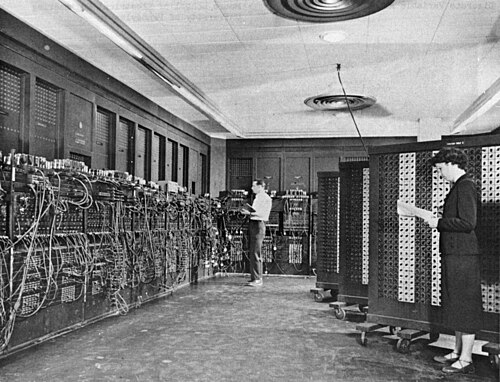
Exército dos EUA · domínio público
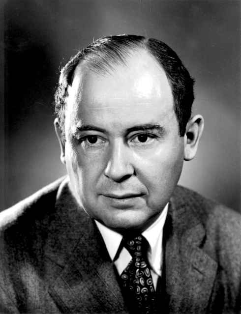
Foto: Los Alamos National Laboratory
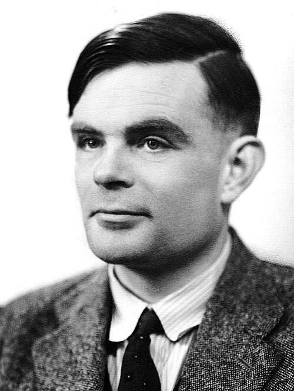
Elliott & Fry, 1951 · domínio público
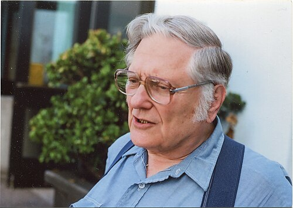
Foto: George M. Bergman, 2008 · CC BY-SA 4.0
O mundo naquela época
| Data | Onde eles viviam | No resto do mundo |
|---|---|---|
| 1939–1945 | Segunda Guerra Mundial; o Projeto Manhattan, em Los Alamos, precisa de cálculos gigantescos; o ENIAC fica pronto no fim de 1945. | O Brasil envia a Força Expedicionária Brasileira à Itália (1944–1945). |
| 1947–1969 | Guerra Fria: corrida espacial, Sputnik (1957) e a chegada à Lua (1969) exigem cálculos de órbitas cada vez mais precisos. | No Brasil, o governo de São Paulo compra um dos primeiros computadores do país (1957); Brasília é inaugurada (1960); a USP constrói o “Patinho Feio” (1972), o primeiro computador feito no Brasil. |
| 1985–1996 | O padrão IEEE 754 (1985) unifica a aritmética dos computadores. | Popularização dos computadores pessoais; a internet comercial chega ao Brasil em 1995. |
O problema
Um computador faz bilhões de contas por segundo, mas cada número é guardado com um número limitado de casas. Cada conta pode introduzir um erro minúsculo de arredondamento. O perigo é que esses erros se acumulem ao longo de milhões de passos. Três casos reais:
- Bolsa de Vancouver (1982–1983): o índice começou em 1.000 e, a cada atualização, era cortado (não arredondado) na terceira casa decimal. Em 22 meses, caiu para 524,811, quando o valor correto era 1.098,892. [53]
- Míssil Patriot (1991): o relógio do sistema contava décimos de segundo, mas 0,1 não pode ser escrito exatamente em binário. Depois de 100 horas ligado, o erro chegou a 0,34 segundo, o suficiente para o radar procurar o míssil inimigo a mais de 600 metros do lugar certo. Em 25 de fevereiro de 1991, em Dhahran, na Arábia Saudita, a falha deixou passar um míssil que matou 28 soldados. [51]
- Foguete Ariane 5 (1996): no voo inaugural, um número grande demais foi convertido para um formato de 16 bits, que não comportava o valor. O sistema de navegação falhou e o foguete se autodestruiu 37 segundos após o lançamento. [11]
![Três cartões. Bolsa de Vancouver, 1982 a 1983: o índice começou em 1.000 e era truncado a cada atualização; em 22 meses caiu para 524,811, quando o valor certo era 1.098,892. Míssil Patriot, 1991: o relógio contava décimos de segundo, mas 0,1 não cabe exato em binário; após 100 horas ligado, o erro chegou a 0,34 segundo, e o sistema procurou o míssil inimigo a mais de 600 metros do lugar certo; 28 soldados morreram. Foguete Ariane 5, 1996: um número grande demais foi convertido para um formato de 16 bits, estourou, e o foguete se destruiu 37 segundos após o lançamento.](rc_images/CalcNumDigitalProblema.svg)
A teoria, passo a passo
Ponto flutuante. O computador guarda números como a notação científica que aprendemos na escola (6,02 × 10²³), só que em binário: um sinal, uma mantissa com os algarismos e um expoente que diz onde fica a vírgula. No formato mais usado (precisão dupla do IEEE 754), a mantissa tem 53 algarismos binários, o que dá cerca de 16 casas decimais. [15]
- Os números que o computador consegue guardar são como marquinhas numa régua: bem apertadas perto do zero e cada vez mais espaçadas para números grandes.
- Qualquer número que caia entre duas marquinhas é arredondado para a mais próxima.
- 0,1 em binário é 0,000110011001100…, com “0011” repetindo para sempre. Por isso, ele é guardado com um erro minúsculo, e 0,1 + 0,2 dá 0,30000000000000004.
![Três partes. Em cima, a notação científica em binário usada pelo padrão IEEE 754: sinal, mantissa com 53 algarismos binários e expoente; dá cerca de 16 casas decimais certas. No meio, uma reta numérica com os números que o computador consegue guardar: eles ficam mais espaçados quanto maiores são, e tudo o que cai entre dois deles é arredondado. Embaixo, o caso famoso: 0,1 em binário é 0,000110011001100… com o padrão 0011 repetindo para sempre, então é cortado. Por isso, 0,1 + 0,2 dá 0,30000000000000004.](rc_images/CalcNumDigitalTeoria.svg)
Estabilidade e condicionamento. Von Neumann, Turing e depois James Wilkinson separaram duas perguntas. A primeira: o problema é sensível? Um problema mal condicionado (com número de condição alto) amplifica qualquer erro dos dados, não importa o método. A segunda: o algoritmo é estável? Um algoritmo estável não amplifica os erros de arredondamento além do que o próprio problema já amplificaria. Wilkinson mostrou, nos anos 1960, que a boa pergunta é: “a resposta calculada é a resposta exata de um problema quase igual?” Isso se chama análise de erro regressiva. [19]
Monte Carlo. Em 1946, recuperando-se de uma doença e jogando paciência, Ulam se perguntou qual era a chance de ganhar uma partida. Calcular era difícil; jogar muitas vezes e contar era fácil. Assim nasceu a ideia de resolver problemas usando sorteios. O nome, sugerido por Metropolis, é uma homenagem ao cassino de Monte Carlo. [25]
Exemplos de uso
![À esquerda, um quadrado de lado 1 com um quarto de círculo de raio 1 dentro, Foram sorteados 200 pontos ao acaso: 158 caíram dentro do quarto de círculo, em verde, e 42 fora, em vermelho, Como a área do quarto de círculo é π ÷ 4, π é aproximadamente 4 × 158 ÷ 200 = 3,16. À direita, uma tabela: com 200 pontos, 3,16; com 10.000 pontos, 3,1416; com 1 milhão de pontos, 3,14138. O erro cai devagar, como 1 dividido pela raiz do número de pontos, mas o método funciona em problemas com muitas dimensões, onde os outros travam.](rc_images/CalcNumDigitalExemplo.svg)
Sorteie pontos ao acaso num quadrado de lado 1. A fração que cai dentro do quarto de círculo é, aproximadamente, a área dele: π ÷ 4. Com 200 pontos, obtemos 3,16; com 1 milhão, 3,1414. O método é lento para π (o erro cai como 1 dividido pela raiz do número de pontos), mas tem uma vantagem enorme: continua funcionando em problemas com centenas de dimensões, onde as grades de Richardson são impossíveis. Por isso Monte Carlo é usado para calcular risco no mercado financeiro, simular reatores nucleares, desenhar luz realista em filmes de animação e prever a propagação de epidemias.
Outras conquistas dessa época: a transformada rápida de Fourier (FFT), de James Cooley e John Tukey (1965), que acelera o processamento de som, imagem e sinais e está em todo celular [7]; e as bibliotecas de álgebra linear, como LINPACK e LAPACK, que colocaram décadas de pesquisa ao alcance de qualquer programador.
Grandes problemas sem resposta
Depois de quatro mil anos, o Cálculo Numérico continua cheio de perguntas em aberto. Algumas valem prêmios de 1 milhão de dólares; outras estão por trás de tecnologias que usamos todos os dias sem saber exatamente por que funcionam.
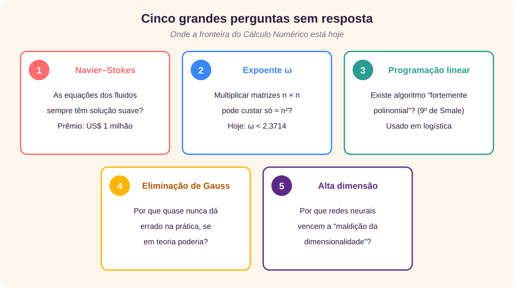
1. Navier-Stokes e a turbulência
As equações de Navier-Stokes, do século XIX, descrevem o movimento de líquidos e gases: ar, água, sangue. Ninguém conseguiu provar que elas sempre têm uma solução “bem comportada” em três dimensões, ou que às vezes a solução “explode”. É um dos sete Problemas do Milênio, com prêmio de 1 milhão de dólares do Instituto Clay. [6]
Exemplo de uso: projetar a asa de um avião. O ar em volta da asa é turbulento: forma redemoinhos de muitos tamanhos, dos metros aos décimos de milímetro. Para simular todos eles diretamente, a grade precisaria de um número de pontos que cresce mais ou menos como a potência 9/4 do chamado número de Reynolds; para um avião comercial, isso daria quatrilhões de pontos (10¹⁵ ou mais), acompanhados por milhões de passos de tempo, muito além de qualquer computador atual. Por isso, engenheiros usam modelos de turbulência: fórmulas aproximadas para os redemoinhos pequenos, calibradas com experimentos. Elas funcionam bem na maioria dos casos, mas falham em situações extremas, como um avião perto de perder a sustentação. O mesmo vale para carros de Fórmula 1, turbinas eólicas, previsão do tempo e fluxo de sangue em artérias. Sem entender a matemática das equações, não sabemos garantir quando a simulação é confiável.
2. Quão rápido dá para multiplicar matrizes?
Multiplicar duas tabelas de números n × n (matrizes) pelo método da escola custa n³ multiplicações. Em 1969, Volker Strassen mostrou que dava para fazer menos, cerca de n^2,807. [45] Desde então, a corrida pelo menor expoente, chamado ω, nunca parou. O recorde em 2024 é ω < 2,371339. [3] A pergunta em aberto: dá para chegar a ω = 2, ou seja, multiplicar matrizes quase tão depressa quanto ler os números?
![Gráfico em degraus do melhor expoente conhecido, ω, para multiplicar matrizes n por n, de 1968 a 2024. O método escolar tem expoente 3. Strassen, 1969: 2,807. Pan, 1978: 2,796. Bini e colegas, 1979: 2,780. Schönhage, 1981: 2,522. Coppersmith e Winograd, 1982: 2,496. Strassen, 1986: 2,479. Coppersmith e Winograd, 1990: 2,376. Depois, décadas de ganhos minúsculos: 2,3737 em 2010, 2,3729 em 2012, 2,37286 em 2014 e 2020, 2,37188 em 2022 e 2,371339 em 2024. Uma linha tracejada em 2 marca o limite: ninguém sabe se dá para chegar lá.](rc_images/CalcNumOmega.svg)
Exemplo de uso: treinar uma inteligência artificial como um grande modelo de linguagem consiste, na maior parte do tempo, em multiplicar matrizes enormes em placas gráficas. Um algoritmo melhor economizaria energia e dinheiro em escala mundial. Mas há uma pegadinha: os algoritmos com os menores expoentes são “galácticos”, só ganham do método comum para matrizes tão grandes que não cabem em computador nenhum. Na prática, os ganhos vêm de truques menores. Em 2022, o sistema de IA AlphaTensor achou uma forma de multiplicar matrizes 4 × 4 com 47 multiplicações, numa aritmética especial [13]; em 2025, o AlphaEvolve achou uma com 48 multiplicações para números complexos, melhorando um recorde de Strassen que durava 56 anos. [26]
3. Existe um algoritmo “fortemente polinomial” para programação linear?
Programação linear é o problema de escolher quantidades (quanto produzir, transportar ou comprar) para gastar o mínimo ou lucrar o máximo, respeitando limites. George Dantzig criou em 1947 o método simplex, que resolve esses problemas muito depressa na prática. Mas, em 1972, Victor Klee e George Minty mostraram exemplos em que ele leva um tempo exponencial. Depois vieram métodos com garantia de tempo polinomial (Khachiyan, 1979; Karmarkar, 1984), mas o tempo deles depende de quantos dígitos têm os dados. Existe um método cujo número de passos dependa só do número de variáveis e restrições? Esse é o 9º problema da lista de Steve Smale para o século XXI, ainda sem resposta. [42]
Exemplo de uso: uma companhia aérea precisa montar a escala de milhares de pilotos e comissários para milhares de voos, respeitando horas de descanso, bases e custos. Refinarias decidem quanto de cada combustível produzir; redes de supermercados, quanto enviar a cada loja. O primeiro grande exemplo foi o “problema da dieta”: em 1947, resolvê-lo com o simplex (achar a dieta mais barata que cumpre as necessidades nutricionais) levou 120 dias de trabalho de 9 pessoas com calculadoras de mesa. Hoje leva milissegundos. Em 2004, Daniel Spielman e Shang-Hua Teng explicaram em parte por que o simplex é rápido na prática, com a análise suavizada: os casos lentos são tão “frágeis” que uma pequena perturbação nos dados os desfaz. [43] Mas a pergunta de Smale continua aberta.
4. Por que a eliminação de Gauss funciona tão bem?
O método dos Nove Capítulos, com uma pequena melhoria chamada pivoteamento parcial (trocar linhas para dividir sempre pelo maior número disponível), é usado em praticamente todo software científico. Em teoria, porém, há matrizes em que os números intermediários crescem como 2ⁿ⁻¹, o que destruiria todas as casas decimais de um sistema com algumas dezenas de incógnitas. Na prática, isso quase nunca acontece. Por quê? Lloyd Trefethen e Robert Schreiber estudaram o comportamento médio em 1990, mas uma explicação completa ainda não existe. [48]
Exemplo de uso: ao projetar um prédio, um programa de engenharia estrutural resolve sistemas com centenas de milhares de incógnitas usando eliminação. Se o crescimento “teórico” acontecesse, o resultado seria lixo numérico, e ninguém perceberia sem uma verificação. Confiamos nesses programas porque décadas de experiência mostram que funcionam, e não porque exista uma prova de que sempre funcionarão.
5. A maldição da dimensionalidade e o mistério das redes neurais
As grades de Richardson funcionam bem em 1, 2 ou 3 dimensões. Mas muitos problemas têm dezenas ou centenas de dimensões. Com só 10 pontos por direção, uma grade em 100 dimensões teria 10¹⁰⁰ pontos, mais do que os átomos do universo observável. Isso se chama maldição da dimensionalidade.
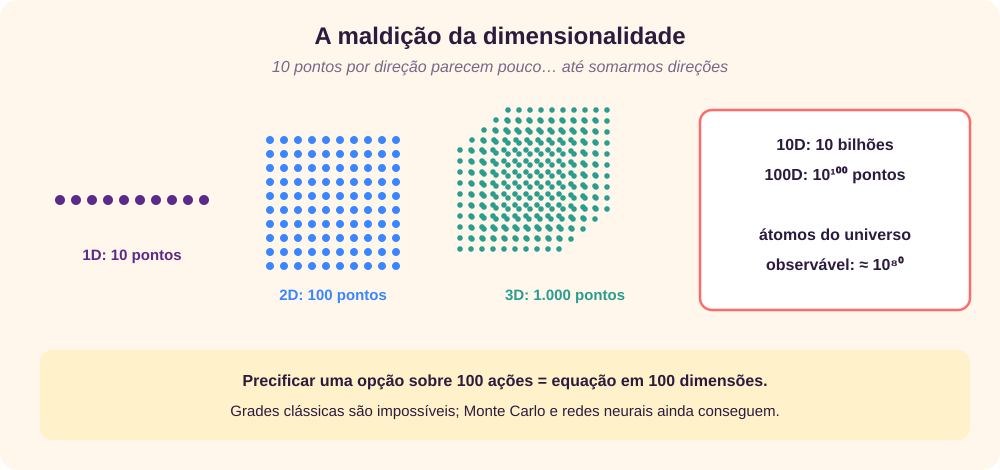
Exemplo de uso: um banco quer calcular o preço justo de um contrato que depende de 100 ações diferentes. A equação de Black-Scholes para esse caso tem 100 dimensões. Em 2018, Jiequn Han, Arnulf Jentzen e Weinan E mostraram que redes neurais conseguem resolver equações desse tipo em centenas de dimensões. [17] O mesmo acontece na química quântica, em que cada elétron de uma molécula acrescenta três dimensões. Funciona, mas a teoria ainda não explica completamente por que as redes neurais escapam da maldição, nem quando se pode confiar no resultado. É uma das perguntas mais ativas da matemática de hoje.
Projeções de futuro
Prever o futuro de uma ciência é arriscado, mas algumas tendências já estão em curso e devem marcar as próximas décadas.

Computadores de exaescala e o limite da energia
Em 2022, o supercomputador Frontier, nos Estados Unidos, foi o primeiro a passar oficialmente de 1 exaflop, ou seja, 10¹⁸ contas por segundo. [46] Em 2024, o El Capitan chegou a cerca de 1,7 exaflop. [47] No Brasil, o supercomputador Santos Dumont, do LNCC, em Petrópolis, atende pesquisas de clima, energia e saúde. [22] O próximo limite não é a velocidade, mas a energia: essas máquinas consomem dezenas de megawatts. Por isso, a eficiência dos algoritmos vai valer cada vez mais do que a força bruta.
Precisão sob medida
As placas gráficas feitas para inteligência artificial são muito mais rápidas com números de baixa precisão, de 16 ou até 8 bits. Uma linha forte de pesquisa mistura precisões: faz a maior parte do trabalho com poucas casas e depois corrige o resultado com algumas contas em alta precisão, recuperando as 16 casas. [20] Para isso, a análise de erro de Wilkinson e Kahan fica ainda mais importante.
Inteligência artificial como calculista
Em 2023, o modelo GraphCast, treinado com décadas de dados, fez previsões de 10 dias em menos de um minuto, superando o melhor modelo tradicional na maioria das medidas. [21] Em 25 de fevereiro de 2025, o Centro Europeu de Previsões Meteorológicas (ECMWF) colocou em operação seu próprio modelo de IA, o AIFS, que gasta cerca de mil vezes menos energia por previsão. [10] Também surgiram as redes neurais informadas pela física, que aprendem respeitando as equações. [40] O desafio para o futuro é garantir o erro: um modelo de IA pode acertar muito e, de vez em quando, errar de forma inesperada. A tendência é combinar IA com os métodos clássicos, que dão garantias.
IA inventando algoritmos
AlphaTensor (2022) e AlphaEvolve (2025) mostraram que sistemas de IA podem descobrir algoritmos numéricos novos, que depois são verificados por matemáticos. [13] [26] É provável que muitas das próximas melhorias em algoritmos de multiplicação, integração e otimização venham dessa parceria entre humanos e máquinas.
Computação quântica, com cautela
Em 2009, Aram Harrow, Avinatan Hassidim e Seth Lloyd propuseram um algoritmo quântico para sistemas lineares que, em certas condições, seria exponencialmente mais rápido. [18] Mas o próprio Scott Aaronson resumiu o problema: é preciso “ler as letras miúdas”. Carregar os dados no computador quântico, ler a resposta e o condicionamento do problema podem apagar a vantagem. [2] A projeção mais realista é que computadores quânticos ajudem em problemas específicos, como simular moléculas, e não substituam o Cálculo Numérico clássico.
Gêmeos digitais e o limite do caos
Projetos como o Destination Earth, da União Europeia, querem construir um gêmeo digital da Terra: uma simulação em altíssima resolução, alimentada continuamente por dados, para testar cenários de clima e desastres. [9] A mesma ideia vale para o coração de um paciente, uma fábrica ou uma cidade. Mas há um limite que nenhum computador vence: em 1963, Edward Lorenz mostrou que a atmosfera é caótica: pequenos erros nos dados crescem até destruir a previsão. [23] Estudos posteriores estimam que, para o tempo do dia a dia, esse limite fica em torno de duas semanas. Por isso, o futuro não é uma única previsão perfeita, mas conjuntos de previsões com probabilidades: “70% de chance de chuva” é Cálculo Numérico sendo honesto sobre o próprio erro.
Conclusões
O escriba da Babilônia, Arquimedes, Liu Hui, Aryabhata, Madhava, al-Kashi, Newton, Euler, Gauss, Richardson, von Neumann e Kahan viveram em mundos muito diferentes, com ferramentas muito diferentes: argila, areia, varetas, papel, calculadoras mecânicas, válvulas e chips. Mas todos fizeram a mesma coisa: trocaram um problema impossível de resolver exatamente por uma sequência de contas simples e se perguntaram quão confiável era a resposta.
Algumas ideias atravessaram milênios quase intactas. O método babilônico reapareceu como caso particular do método de Newton. As diferenças da tabela de senos de Aryabhata anteciparam as de Richardson, e os termos de correção de Madhava já eram estimativas de erro. A eliminação dos Nove Capítulos virou a eliminação de Gauss e hoje mede a velocidade dos supercomputadores. As diferenças finitas de Richardson, feitas à mão durante uma guerra, viraram a previsão do tempo que você consulta no celular.
Ao mesmo tempo, o Cálculo Numérico está longe de terminado. Não sabemos se as equações dos fluidos sempre têm solução, nem quão depressa se pode multiplicar matrizes, nem por que alguns dos nossos métodos favoritos funcionam tão bem. E a inteligência artificial, que depende inteiramente de Cálculo Numérico, trouxe novas perguntas sobre confiança e erro.
Talvez a maior lição seja esta: calcular bem não é ter todas as casas decimais, mas saber quais delas são verdadeiras. Da tabuleta de argila ao supercomputador, essa continua sendo a arte do Cálculo Numérico.
Glossário essencial
- Algoritmo
- Receita com um número finito de passos para resolver um problema.
- Arredondamento
- Erro causado por guardar um número com uma quantidade limitada de casas.
- Condicionamento
- Sensibilidade de um problema a pequenas mudanças nos dados; problemas mal condicionados amplificam erros.
- Convergência
- Quando as aproximações de um método chegam cada vez mais perto da resposta. É quadrática quando as casas certas dobram a cada passo.
- Derivada
- A inclinação de uma curva num ponto; mede quão depressa algo está mudando.
- Diferenças finitas
- Troca de derivadas por diferenças entre valores em pontos vizinhos de uma grade.
- Equação diferencial
- Equação que descreve como uma quantidade muda, em vez de dizer seu valor diretamente.
- Estabilidade
- Qualidade de um algoritmo que não amplifica os erros de arredondamento além do inevitável.
- Interpolação
- Estimar valores entre os pontos conhecidos de uma tabela, “ligando os pontos” com uma reta ou uma curva.
- Iteração
- Repetir a mesma conta, usando o resultado anterior como ponto de partida.
- Mínimos quadrados
- Escolher a curva que torna mínima a soma dos quadrados dos erros.
- Monte Carlo
- Família de métodos que usam sorteios aleatórios para estimar resultados.
- Ponto flutuante
- Forma de guardar números no computador como notação científica em binário (padrão IEEE 754).
- Raiz de uma equação
- Valor que faz uma expressão f(x) dar zero.
- Série infinita
- Soma com infinitos termos cujo total se aproxima de um valor, como 1 − 1/3 + 1/5 − … = π/4.
- Sistema linear
- Conjunto de equações de primeiro grau com várias incógnitas.
- Truncamento
- Erro causado por interromper um processo infinito, como uma soma sem fim ou uma iteração.
Revisão rápida
1. O que o Cálculo Numérico estuda?
Algoritmos que resolvem, de forma aproximada e com erro controlado, problemas com números reais, curvas e mudanças.
2. Qual é a receita babilônica para √N?
Novo chute = (chute + N ÷ chute) ÷ 2, repetido até ficar bom o bastante.
3. Como Arquimedes garantiu que sua aproximação de π estava certa?
Espremendo o círculo entre um polígono de dentro e outro de fora: π fica obrigatoriamente entre os dois perímetros.
4. Qual é a ideia da eliminação dos Nove Capítulos?
Combinar equações para ir zerando incógnitas até sobrar uma equação com uma só incógnita, e depois voltar resolvendo.
5. De onde vem a palavra “algoritmo”?
Do nome do matemático al-Khwarizmi, que trabalhou em Bagdá por volta de 820.
6. Qual é a fórmula do método de Newton?
x novo = x − f(x) ÷ f’(x): segue-se a reta tangente até ela cortar o eixo.
7. Por que o método de Runge-Kutta é melhor que o de Euler?
Porque mede a inclinação em vários pontos do passo e faz uma média, em vez de usar só a do começo.
8. O que o método dos mínimos quadrados minimiza?
A soma dos quadrados dos erros entre os dados e a curva.
9. Por que 0,1 + 0,2 não dá exatamente 0,3 no computador?
Porque 0,1 e 0,2 têm infinitas casas em binário e são arredondados ao ser guardados.
10. Por que a previsão do tempo não pode ser perfeita por mais de duas semanas?
Porque a atmosfera é caótica: pequenos erros nos dados crescem até dominar a previsão.
11. O que Madhava fez de novo com as séries infinitas?
Além de somar os termos, estimou o pedaço que faltava quando se parava no meio (um termo de correção), ou seja, estimou o erro de truncamento.
Referências
- ACM, “William Kahan – A.M. Turing Award Laureate”, amturing.acm.org.
- Aaronson, S., “Read the fine print”, 2015, Nature Physics 11.
- Alman, J.; Duan, R.; Vassilevska Williams, V.; Xu, Y.; Xu, Z.; Zhou, R., “More Asymmetry Yields Faster Matrix Multiplication”, 2024, arXiv:2404.16349.
- Bodleian Libraries, “Carbon dating finds Bakhshali manuscript contains oldest recorded origins of the symbol “zero””, 2017, bodleian.ox.ac.uk.
- Butcher, J. C., “A history of Runge-Kutta methods”, 1996, Applied Numerical Mathematics 20.
- Clay Mathematics Institute, “Navier–Stokes Equation”, claymath.org.
- Cooley, J. W.; Tukey, J. W., “An algorithm for the machine calculation of complex Fourier series”, 1965, Mathematics of Computation 19.
- Courant, R.; Friedrichs, K.; Lewy, H., “Über die partiellen Differenzengleichungen der mathematischen Physik”, 1928, Mathematische Annalen 100.
- Destination Earth, “Destination Earth – a digital twin of the Earth”, destination-earth.eu.
- ECMWF, “ECMWF’s AI forecasts become operational”, 2025, ecmwf.int.
- ESA, “Ariane 501 – Presentation of Inquiry Board report”, 1996, esa.int.
- Euler, L., “Institutionum calculi integralis, vol. 1 (E342)”, 1768, Euler Archive.
- Fawzi, A. et al., “Discovering faster matrix multiplication algorithms with reinforcement learning”, 2022, Nature 610.
- Fowler, D.; Robson, E., “Square Root Approximations in Old Babylonian Mathematics: YBC 7289 in Context”, 1998, Historia Mathematica 25.
- Goldberg, D., “What Every Computer Scientist Should Know About Floating-Point Arithmetic”, 1991, ACM Computing Surveys 23.
- Grcar, J. F., “John von Neumann’s Analysis of Gaussian Elimination and the Origins of Modern Numerical Analysis”, 2011, SIAM Review 53.
- Han, J.; Jentzen, A.; E, W., “Solving high-dimensional partial differential equations using deep learning”, 2018, PNAS 115.
- Harrow, A. W.; Hassidim, A.; Lloyd, S., “Quantum algorithm for linear systems of equations”, 2009, arXiv:0811.3171.
- Higham, N. J., “Accuracy and Stability of Numerical Algorithms, 2nd ed.”, 2002, SIAM.
- Higham, N. J.; Mary, T., “Mixed precision algorithms in numerical linear algebra”, 2022, Acta Numerica 31.
- Lam, R. et al., “Learning skillful medium-range global weather forecasting”, 2023, Science 382.
- LNCC, “Supercomputador Santos Dumont”, sdumont.lncc.br.
- Lorenz, E. N., “Deterministic Nonperiodic Flow”, 1963, Journal of the Atmospheric Sciences 20.
- Lynch, P., “The origins of computer weather prediction and climate modeling”, 2008, Journal of Computational Physics 227.
- Metropolis, N.; Ulam, S., “The Monte Carlo Method”, 1949, Journal of the American Statistical Association 44.
- Novikov, A. et al., “AlphaEvolve: A coding agent for scientific and algorithmic discovery”, 2025, arXiv:2506.13131.
- O’Connor, J. J.; Robertson, E. F., “Ghiyath al-Din Jamshid Mas’ud al-Kashi”, MacTutor.
- O’Connor, J. J.; Robertson, E. F., “Abu Ja’far Muhammad ibn Musa Al-Khwarizmi”, MacTutor.
- O’Connor, J. J.; Robertson, E. F., “Archimedes of Syracuse”, MacTutor.
- O’Connor, J. J.; Robertson, E. F., “Aryabhata the Elder”, MacTutor.
- O’Connor, J. J.; Robertson, E. F., “Brahmagupta”, MacTutor.
- O’Connor, J. J.; Robertson, E. F., “Johann Carl Friedrich Gauss”, MacTutor.
- O’Connor, J. J.; Robertson, E. F., “Heron of Alexandria”, MacTutor.
- O’Connor, J. J.; Robertson, E. F., “Martin Wilhelm Kutta”, MacTutor.
- O’Connor, J. J.; Robertson, E. F., “Liu Hui”, MacTutor.
- O’Connor, J. J.; Robertson, E. F., “Madhava of Sangamagramma”, MacTutor.
- O’Connor, J. J.; Robertson, E. F., “Nine chapters on the Mathematical art”, MacTutor.
- O’Connor, J. J.; Robertson, E. F., “Lewis Fry Richardson”, MacTutor.
- Plofker, K., “Mathematics in India”, 2009, Princeton University Press.
- Raissi, M.; Perdikaris, P.; Karniadakis, G. E., “Physics-informed neural networks”, 2019, Journal of Computational Physics 378.
- Roy, R., “The Discovery of the Series Formula for π by Leibniz, Gregory and Nilakantha”, 1990, Mathematics Magazine 63.
- Smale, S., “Mathematical problems for the next century”, 1998, The Mathematical Intelligencer 20.
- Spielman, D. A.; Teng, S.-H., “Smoothed analysis of algorithms: Why the simplex algorithm usually takes polynomial time”, 2004, Journal of the ACM 51.
- Stigler, S. M., “Gauss and the Invention of Least Squares”, 1981, The Annals of Statistics 9.
- Strassen, V., “Gaussian elimination is not optimal”, 1969, Numerische Mathematik 13.
- TOP500, “June 2022 list”, 2022, top500.org.
- TOP500, “November 2024 list”, 2024, top500.org.
- Trefethen, L. N.; Schreiber, R. S., “Average-case stability of Gaussian elimination”, 1990, SIAM Journal on Matrix Analysis and Applications 11.
- Trefethen, L. N., “The definition of numerical analysis”, 1992, SIAM News.
- Turing, A. M., “Rounding-off errors in matrix processes”, 1948, The Quarterly Journal of Mechanics and Applied Mathematics 1.
- U.S. General Accounting Office, “Patriot Missile Defense: Software Problem Led to System Failure at Dhahran, Saudi Arabia (IMTEC-92-26)”, 1992, gao.gov.
- von Neumann, J.; Goldstine, H. H., “Numerical inverting of matrices of high order”, 1947, Bulletin of the AMS 53.
- Wikipedia, “Vancouver Stock Exchange”, en.wikipedia.org.
- Ypma, T. J., “Historical development of the Newton–Raphson method”, 1995, SIAM Review 37.
![Four-step flow. A continuous problem, such as finding the square root of 2, the area under a curve or the solution of an equation, becomes an algorithm with finitely many steps of addition, subtraction, multiplication and division. The algorithm produces an approximate answer, such as 1.41421, and the error is measured. If the error is still too large, the algorithm repeats. Below, the three kinds of error: model error, when the equation simplifies reality; truncation error, when we stop an infinite process; and rounding error, when we keep only a few decimal places.](rc_images/CalcNumConceito-en.svg)
![Timeline with eleven milestones, not to scale: c. 1800 BC, Babylon: √2 to 6 places on a clay YBC 7289; c. 250 BC, Archimedes: π squeezed between two 96-gons; c. 200 BC–263, China: Nine Chapters and Liu Hui: linear systems; 499–c. 1400, India: sines, zero, interpolation and infinite series; 820 · 1424, Baghdad, Samarkand: al-Khwarizmi and al-Kashi: algorithm and iteration; 1669 · 1690, Newton and Raphson: roots of equations via the tangent line; 1768 · 1901, Euler, Runge, Kutta: predicting the future with differential equations; 1801 · 1809, Gauss: finds Ceres again with least squares; 1922, Richardson: weather forecast with finite differences, by hand; 1946–1985, Digital age: ENIAC, Monte Carlo, von Neumann, Turing IEEE 754; today, Exascale and AI: 10¹⁸ operations per second and AI that invents algorithms.](rc_images/CalcNumLinhaTempo-en.svg)
![On the left, a table for the square root of 2 starting from the guess 1. Step 1: guess 1, 2 divided by 1 is 2, average 1.5, no correct decimals. Step 2: guess 1.5, 2 divided by 1.5 is 1.3333, average 1.41667, two correct decimals. Step 3: guess 1.41667, division 1.41176, average 1.414216, five correct decimals. Step 4: average 1.41421356237, eleven correct decimals. The correct decimals almost double at each step. On the right, Heron of Alexandria’s example for the square root of 720: guess 27, 720 divided by 27 is 26 and two thirds, the average is 26 and five sixths, 26.8333, against the true value 26.8328.](rc_images/CalcNumBabiloniaExemplo-en.svg)
![Four stages of elimination. Stage 1: set up the table with the numbers 3, 2, 1 and 39; 2, 3, 1 and 34; 1, 2, 3 and 26. Stage 2: multiply row 2 by 3 and subtract row 1 twice, and multiply row 3 by 3 and subtract row 1, zeroing the first column: the rows become 0, 5, 1 and 24 and 0, 4, 8 and 39. Stage 3: multiply row 3 by 5 and subtract 4 times row 2: 0, 0, 36 and 99. Stage 4: back-substitute from the bottom up: low = 99 divided by 36 = 2.75; medium = (24 − 2.75) divided by 5 = 4.25; high = (39 − 2 × 4.25 − 2.75) divided by 3 = 9.25.](rc_images/CalcNumChinaTeoria-en.svg)
![On the left, a snack-bar problem: a pie plus a juice plus a croquette cost 18 dollars; 2 pies and 1 croquette, 20 dollars; 1 juice and 2 croquettes, 17 dollars. Eliminating step by step, pie = 7, juice = 5 and croquette = 6 dollars. On the right, where linear systems show up today, with typical sizes: electrical circuits, tens to millions of unknowns; structures of bridges and buildings, millions; 3D games and animation, thousands per frame; weather forecasting, billions; artificial intelligence, billions of numbers per second.](rc_images/CalcNumChinaExemplo-en.svg)
![On the left, a quarter circle of radius 3438 divided into 24 equal arcs of 3°45’, or 225 minutes of arc, with the vertical half-chords at each point: these are the Indian sines, called jyā, “bowstring”. All 24 values have to be computed, as well as those in between. On the right, two cards. Why radius 3438? Because the circle has 21,600 minutes of arc and 21,600 divided by 2π is about 3438; that way a small arc and its sine almost coincide. And Aryabhata’s π, in 499: 62,832 divided by 20,000, equal to 3.1416, which he calls “approximate”.](rc_images/CalcNumIndiaProblema-en.svg)
![On the left, a bar chart of the 24 differences in Aryabhata’s table, from 225 down to 7: each sine is the previous one plus a difference, and the differences keep shrinking. On the right, the rule: new difference = previous difference − (sum of the sines so far) ÷ 233.5. Aryabhata uses the divisor 225; with the exact divisor, about 233.5, the rule reproduces the table almost perfectly. First steps: 225; 225 − 225 ÷ 233.5 ≈ 224; 224 − 449 ÷ 233.5 ≈ 222; 222 − 671 ÷ 233.5 ≈ 219. Below: this is the idea of finite differences, the same one Richardson would use in 1922, 1,400 years earlier.](rc_images/CalcNumIndiaTeoria-en.svg)

![On the left, a table with some of Aryabhata’s sines, obtained by adding the differences, compared with the modern value 3438 times the sine: 3°45’, 225 and 225; 7°30’, 449 and 449; 15°, 890 and 890; 30°, 1719 and 1719; 45°, 2431 and 2431; 60°, 2978 and 2977; 78°45’, 3372 and 3372; 90°, 3438 and 3438. On the right, Brahmagupta’s second-order interpolation, from AD 665, to find the sine of 80°, which lies between 78°45’ and 82°30’. Joining the points with a straight line gives 3384.3, an error of 1.4. Brahmagupta’s formula, which also uses the previous difference to account for the curvature, gives 3385.9, an error of only 0.1. The true value is 3385.8.](rc_images/CalcNumIndiaExemplo-en.svg)

![On the left, a planet’s elliptical orbit with the Sun at one focus and the planet at a point on the ellipse. Kepler discovered that the planet sweeps equal areas in equal times. To know where it is on a given date, you must solve Kepler’s equation, M = E − e · sin E, where M comes from the time, e is how flattened the orbit is and E gives the position. No formula isolates E. On the right, the graph of the function f(E) = E − e · sin E − M crossing zero at a point marked with a question mark: finding the root means finding the planet.](rc_images/CalcNumNewtonProblema-en.svg)
![On the left, a schematic map of Central Europe covered by a grid of alternating squares, like the chessboard Richardson used: in some squares you compute pressure, in others the wind. On the right, the plan: measure the air now, apply the laws of physics in each square and work out what it will be like 6 hours later. Richardson did this by hand in about six weeks and predicted a pressure change of 145 hectopascals in 6 hours, when the real one was almost zero. He dreamed of a forecast factory with 64,000 human computers.](rc_images/CalcNumRichardsonProblema-en.svg)


![Three cards. Vancouver Stock Exchange, 1982 to 1983: the index started at 1,000 and was truncated at every update; in 22 months it fell to 524.811 when the right value was 1,098.892. Patriot missile, 1991: the clock counted tenths of a second, but 0.1 does not fit exactly in binary; after 100 hours of operation the error reached 0.34 second, and the system looked for the enemy missile more than 600 metres from the right place; 28 soldiers died. Ariane 5 rocket, 1996: a number that was too large was converted to a 16-bit format, overflowed, and the rocket destroyed itself 37 seconds after launch.](rc_images/CalcNumDigitalProblema-en.svg)
![Three parts. At the top, the binary scientific notation used by the IEEE 754 standard: sign, a 53-bit mantissa and an exponent; it gives about 16 correct decimal digits. In the middle, a number line with the numbers a computer can store: they get further apart the larger they are, and anything that falls between two of them is rounded. At the bottom, the famous case: 0.1 in binary is 0.000110011001100… with the pattern 0011 repeating forever, so it gets cut off. That is why 0.1 + 0.2 gives 0.30000000000000004.](rc_images/CalcNumDigitalTeoria-en.svg)
![On the left, a square of side 1 with a quarter circle of radius 1 inside. 200 points were drawn at random: 158 landed inside the quarter circle, in green, and 42 outside, in red. Since the area of the quarter circle is π ÷ 4, π is approximately 4 × 158 ÷ 200 = 3.16. On the right, a table: with 200 points, 3.16; with 10,000 points, 3.1416; with 1 million points, 3.14138. The error shrinks slowly, like 1 divided by the square root of the number of points, but the method works on problems with many dimensions, where others get stuck.](rc_images/CalcNumDigitalExemplo-en.svg)
![Step chart of the best known exponent, ω, for multiplying n by n matrices, from 1968 to 2024. The schoolbook method has exponent 3. Strassen, 1969: 2.807. Pan, 1978: 2.796. Bini and colleagues, 1979: 2.780. Schönhage, 1981: 2.522. Coppersmith and Winograd, 1982: 2.496. Strassen, 1986: 2.479. Coppersmith and Winograd, 1990: 2.376. Then decades of tiny gains: 2.3737 in 2010, 2.3729 in 2012, 2.37286 in 2014 and 2020, 2.37188 in 2022 and 2.371339 in 2024. A dashed line at 2 marks the limit: nobody knows if it can be reached.](rc_images/CalcNumOmega-en.svg)

![Flusso in quattro fasi. Un problema continuo, come trovare la radice di 2, l’area sotto una curva o la soluzione di un’equazione, diventa un algoritmo con un numero finito di passi di addizione, sottrazione, moltiplicazione e divisione. L’algoritmo produce una risposta approssimata, come 1,41421, e si misura l’errore. Se l’errore è ancora grande, l’algoritmo si ripete. Sotto, i tre tipi di errore: di modello, quando l’equazione semplifica la realtà; di troncamento, quando fermiamo un processo infinito; e di arrotondamento, quando teniamo solo alcune cifre decimali.](rc_images/CalcNumConceito-it.svg)
![Linea del tempo con undici tappe, non in scala: c. 1800 a.C., Babilonia: √2 con 6 cifre su una tavoletta YBC 7289; c. 250 a.C., Archimede: π stretto tra due poligoni di 96 lati; c. 200 a.C.–263, Cina: Nove capitoli e Liu Hui: sistemi lineari; 499–c. 1400, India: seni, zero, interpolazione e serie infinite; 820 · 1424, Baghdad, Samarcanda: al-Khwarizmi e al-Kashi: algoritmo e iterazione; 1669 · 1690, Newton e Raphson: radici di equazioni con la retta tangente; 1768 · 1901, Euler, Runge, Kutta: prevedere il futuro con equazioni differenziali; 1801 · 1809, Gauss: ritrova Cerere con i minimi quadrati; 1922, Richardson: previsioni meteo con differenze finite, a mano; 1946–1985, Era digitale: ENIAC, Monte Carlo, von Neumann, Turing IEEE 754; oggi, Exascala e IA: 10¹⁸ operazioni al secondo e IA che inventa algoritmi.](rc_images/CalcNumLinhaTempo-it.svg)
![A sinistra, una tabella per la radice di 2 partendo dalla stima 1. Passo 1: stima 1, 2 diviso 1 fa 2, media 1,5, nessuna cifra decimale giusta. Passo 2: stima 1,5, 2 diviso 1,5 fa 1,3333, media 1,41667, due cifre giuste. Passo 3: stima 1,41667, divisione 1,41176, media 1,414216, cinque cifre giuste. Passo 4: media 1,41421356237, undici cifre giuste. Le cifre giuste quasi raddoppiano a ogni passo. A destra, l’esempio di Erone di Alessandria per la radice di 720: stima 27, 720 diviso 27 fa 26 e due terzi, la media è 26 e cinque sesti, 26,8333, contro il valore vero 26,8328.](rc_images/CalcNumBabiloniaExemplo-it.svg)
![Quattro fasi dell’eliminazione. Fase 1: impostare la tabella con i numeri 3, 2, 1 e 39; 2, 3, 1 e 34; 1, 2, 3 e 26. Fase 2: moltiplicare la riga 2 per 3 e sottrarre due volte la riga 1, e moltiplicare la riga 3 per 3 e sottrarre la riga 1, azzerando la prima colonna: le righe diventano 0, 5, 1 e 24 e 0, 4, 8 e 39. Fase 3: moltiplicare la riga 3 per 5 e sottrarre 4 volte la riga 2: 0, 0, 36 e 99. Fase 4: risolvere a ritroso, dal basso verso l’alto: bassa = 99 diviso 36 = 2,75; media = (24 − 2,75) diviso 5 = 4,25; alta = (39 − 2 × 4,25 − 2,75) diviso 3 = 9,25.](rc_images/CalcNumChinaTeoria-it.svg)
![A sinistra, un problema al bar: un panzerotto più un succo più una crocchetta costano 18 euro; 2 panzerotti e 1 crocchetta, 20 euro; 1 succo e 2 crocchette, 17 euro. Eliminando passo dopo passo, panzerotto = 7, succo = 5 e crocchetta = 6 euro. A destra, dove compaiono oggi i sistemi lineari, con le dimensioni tipiche: circuiti elettrici, da decine a milioni di incognite; strutture di ponti ed edifici, milioni; giochi 3D e animazione, migliaia per fotogramma; previsioni meteo, miliardi; intelligenza artificiale, miliardi di numeri al secondo.](rc_images/CalcNumChinaExemplo-it.svg)
![A sinistra, un quarto di cerchio di raggio 3438 diviso in 24 archi uguali di 3°45’, cioè 225 minuti d’arco, con le semicorde verticali in ogni punto: sono i seni indiani, chiamati jyā, “corda d’arco”. Bisogna calcolare i 24 valori e anche quelli intermedi. A destra, due schede. Perché raggio 3438? Perché il cerchio ha 21.600 minuti d’arco e 21.600 diviso 2π fa circa 3438; così un arco piccolo e il suo seno quasi coincidono. E il π di Aryabhata, nel 499: 62.832 diviso 20.000, uguale a 3,1416, che lui chiama “approssimato”.](rc_images/CalcNumIndiaProblema-it.svg)
![A sinistra, un grafico a barre con le 24 differenze della tavola di Aryabhata, da 225 fino a 7: ogni seno è il precedente più una differenza, e le differenze si accorciano. A destra, la regola: nuova differenza = differenza precedente − (somma dei seni fin qui) ÷ 233,5. Aryabhata usa il divisore 225; con il divisore esatto, circa 233,5, la regola riproduce la tavola quasi alla perfezione. Primi passi: 225; 225 − 225 ÷ 233,5 ≈ 224; 224 − 449 ÷ 233,5 ≈ 222; 222 − 671 ÷ 233,5 ≈ 219. Sotto: è l’idea delle differenze finite, la stessa che Richardson userà nel 1922, con 1.400 anni di anticipo.](rc_images/CalcNumIndiaTeoria-it.svg)

![A sinistra, una tabella con alcuni seni di Aryabhata, ottenuti sommando le differenze, confrontati con il valore moderno 3438 per il seno: 3°45’, 225 e 225; 7°30’, 449 e 449; 15°, 890 e 890; 30°, 1719 e 1719; 45°, 2431 e 2431; 60°, 2978 e 2977; 78°45’, 3372 e 3372; 90°, 3438 e 3438. A destra, l’interpolazione di secondo ordine di Brahmagupta, dell’anno 665, per trovare il seno di 80°, che sta tra 78°45’ e 82°30’. Unendo i punti con una retta si ottiene 3384,3, con un errore di 1,4. La formula di Brahmagupta, che usa anche la differenza precedente per tenere conto della curvatura, dà 3385,9, con un errore di appena 0,1. Il valore vero è 3385,8.](rc_images/CalcNumIndiaExemplo-it.svg)
![A sinistra, un cerchio di raggio 1 con un angolo piccolissimo di 1 grado; l’altezza del punto sul cerchio è il seno di 1 grado. Gli astronomi avevano bisogno di tavole dei seni per prevedere la posizione degli astri, fare calendari e trovare la direzione della Mecca. Con la geometria si calcola esattamente il seno di 3 gradi, ma dividere un angolo in tre parti uguali con riga e compasso è impossibile. A destra, una tavola dei seni con 3 gradi compilato, 0,0523359563, e 1 e 2 gradi con punti interrogativi.](rc_images/CalcNumIslaProblema-it.svg)

![A sinistra, l’orbita ellittica di un pianeta con il Sole in uno dei fuochi e il pianeta in un punto dell’ellisse. Keplero scoprì che il pianeta spazza aree uguali in tempi uguali. Per sapere dove si trova in una data, bisogna risolvere l’equazione di Keplero, M = E − e · sen E, dove M viene dal tempo, e è lo schiacciamento dell’orbita ed E dà la posizione. Non esiste una formula che isoli E. A destra, il grafico della funzione f(E) = E − e · sen E − M che attraversa lo zero in un punto segnato con un punto interrogativo: trovare la radice significa trovare il pianeta.](rc_images/CalcNumNewtonProblema-it.svg)
![A sinistra, una mappa schematica dell’Europa centrale coperta da una griglia di quadrati alternati, come la scacchiera usata da Richardson: in alcuni quadrati si calcola la pressione, negli altri il vento. A destra, il piano: misurare l’aria adesso, applicare le leggi della fisica in ogni quadrato e calcolare come sarà fra 6 ore. Richardson lo fece a mano in circa sei settimane e previde una variazione di pressione di 145 ettopascal in 6 ore, quando quella reale fu quasi nulla. Sognava una fabbrica di previsioni con 64.000 calcolatori umani.](rc_images/CalcNumRichardsonProblema-it.svg)
![Tre schede. Borsa di Vancouver, 1982–1983: l’indice partì da 1.000 e veniva troncato a ogni aggiornamento; in 22 mesi scese a 524,811, quando il valore giusto era 1.098,892. Missile Patriot, 1991: l’orologio contava decimi di secondo, ma 0,1 non si rappresenta esattamente in binario; dopo 100 ore di funzionamento l’errore arrivò a 0,34 secondi, e il sistema cercò il missile nemico a più di 600 metri dal punto giusto; morirono 28 soldati. Razzo Ariane 5, 1996: un numero troppo grande fu convertito in un formato a 16 bit, andò in overflow, e il razzo si autodistrusse 37 secondi dopo il lancio.](rc_images/CalcNumDigitalProblema-it.svg)
![Tre parti. In alto, la notazione scientifica binaria usata dallo standard IEEE 754: segno, mantissa di 53 cifre binarie ed esponente; dà circa 16 cifre decimali giuste. Al centro, una retta numerica con i numeri che il computer riesce a memorizzare: sono più distanziati quanto più sono grandi, e tutto ciò che cade tra due di essi viene arrotondato. In basso, il caso famoso: 0,1 in binario è 0,000110011001100… con lo schema 0011 che si ripete all’infinito, quindi viene tagliato. Per questo 0,1 + 0,2 dà 0,30000000000000004.](rc_images/CalcNumDigitalTeoria-it.svg)
![A sinistra, un quadrato di lato 1 con dentro un quarto di cerchio di raggio 1, Sono stati estratti 200 punti a caso: 158 sono caduti dentro il quarto di cerchio, in verde, e 42 fuori, in rosso, Poiché l’area del quarto di cerchio è π ÷ 4, π è circa 4 × 158 ÷ 200 = 3,16. A destra, una tabella: con 200 punti, 3,16; con 10.000 punti, 3,1416; con 1 milione di punti, 3,14138. L’errore cala lentamente, come 1 diviso la radice del numero di punti, ma il metodo funziona su problemi con molte dimensioni, dove gli altri si bloccano.](rc_images/CalcNumDigitalExemplo-it.svg)

![Grafico a gradini del miglior esponente noto, ω, per moltiplicare matrici n per n, dal 1968 al 2024. Il metodo scolastico ha esponente 3. Strassen, 1969: 2,807. Pan, 1978: 2,796. Bini e colleghi, 1979: 2,780. Schönhage, 1981: 2,522. Coppersmith e Winograd, 1982: 2,496. Strassen, 1986: 2,479. Coppersmith e Winograd, 1990: 2,376. Poi decenni di guadagni minuscoli: 2,3737 nel 2010, 2,3729 nel 2012, 2,37286 nel 2014 e nel 2020, 2,37188 nel 2022 e 2,371339 nel 2024. Una linea tratteggiata a 2 segna il limite: nessuno sa se si possa raggiungere.](rc_images/CalcNumOmega-it.svg)
![Sei tendenze: Exascala: 10¹⁸ operazioni al secondo dal 2022 (Frontier); Precisione su misura: meno cifre dove si può, di più dove conta; IA come calcolatore: previsioni meteo con IA operative dal 2025; IA che inventa algoritmi: AlphaTensor (2022), AlphaEvolve (2025); Calcolo quantistico: promessa per alcuni problemi; molte riserve; Gemelli digitali: copie della Terra, del corpo e delle fabbriche, in tempo reale. Tutte convergono su un’idea: calcolare con fiducia, conoscendo la dimensione dell’errore.](rc_images/CalcNumFuturo-it.svg)
![Flujo en cuatro etapas. Un problema continuo, como hallar la raíz de 2, el área bajo una curva o la solución de una ecuación, se convierte en un algoritmo con un número finito de pasos de suma, resta, multiplicación y división. El algoritmo produce una respuesta aproximada, como 1,41421, y se mide el error. Si el error todavía es grande, el algoritmo se repite. Abajo, los tres tipos de error: de modelo, cuando la ecuación simplifica la realidad; de truncamiento, cuando detenemos un proceso infinito; y de redondeo, cuando guardamos solo algunas cifras decimales.](rc_images/CalcNumConceito-es.svg)
![Línea de tiempo con once etapas, no a escala: c. 1800 a. C., Babilonia: √2 con 6 cifras en una tablilla YBC 7289; c. 250 a. C., Arquímedes: π encerrado entre dos polígonos de 96 lados; c. 200 a. C.–263, China: Nueve capítulos y Liu Hui: sistemas lineales; 499–c. 1400, India: senos, cero, interpolación y series infinitas; 820 · 1424, Bagdad, Samarcanda: al-Juarismi y al-Kashi: algoritmo e iteración; 1669 · 1690, Newton y Raphson: raíces de ecuaciones con la recta tangente; 1768 · 1901, Euler, Runge, Kutta: prever el futuro con ecuaciones diferenciales; 1801 · 1809, Gauss: reencuentra Ceres con los mínimos cuadrados; 1922, Richardson: pronóstico del tiempo con diferencias finitas, a mano; 1946–1985, Era digital: ENIAC, Monte Carlo, von Neumann, Turing IEEE 754; hoy, Exaescala e IA: 10¹⁸ operaciones por segundo e IA que inventa algoritmos.](rc_images/CalcNumLinhaTempo-es.svg)

![A la izquierda, una tabla para la raíz de 2 partiendo de la estimación 1. Paso 1: estimación 1, 2 dividido por 1 da 2, promedio 1,5, ninguna cifra decimal correcta. Paso 2: estimación 1,5, 2 dividido por 1,5 da 1,3333, promedio 1,41667, dos cifras correctas. Paso 3: estimación 1,41667, división 1,41176, promedio 1,414216, cinco cifras correctas. Paso 4: promedio 1,41421356237, once cifras correctas. Las cifras correctas casi se duplican en cada paso. A la derecha, el ejemplo de Herón de Alejandría para la raíz de 720: estimación 27, 720 dividido por 27 da 26 y dos tercios, el promedio es 26 y cinco sextos, 26,8333, frente al valor real 26,8328.](rc_images/CalcNumBabiloniaExemplo-es.svg)
![Cuatro etapas de la eliminación. Etapa 1: armar la tabla con los números 3, 2, 1 y 39; 2, 3, 1 y 34; 1, 2, 3 y 26. Etapa 2: multiplicar la fila 2 por 3 y restar dos veces la fila 1, y multiplicar la fila 3 por 3 y restar la fila 1, anulando la primera columna: las filas quedan 0, 5, 1 y 24 y 0, 4, 8 y 39. Etapa 3: multiplicar la fila 3 por 5 y restar 4 veces la fila 2: 0, 0, 36 y 99. Etapa 4: resolver hacia atrás, de abajo hacia arriba: baja = 99 dividido por 36 = 2,75; media = (24 − 2,75) dividido por 5 = 4,25; alta = (39 − 2 × 4,25 − 2,75) dividido por 3 = 9,25.](rc_images/CalcNumChinaTeoria-es.svg)
![A la izquierda, un problema en el bar: una empanada más un jugo más una croqueta cuestan 18 euros; 2 empanadas y 1 croqueta, 20 euros; 1 jugo y 2 croquetas, 17 euros. Eliminando paso a paso, empanada = 7, jugo = 5 y croqueta = 6 euros. A la derecha, dónde aparecen hoy los sistemas lineales, con los tamaños típicos: circuitos eléctricos, de decenas a millones de incógnitas; estructuras de puentes y edificios, millones; juegos 3D y animación, miles por fotograma; pronóstico del tiempo, miles de millones; inteligencia artificial, miles de millones de números por segundo.](rc_images/CalcNumChinaExemplo-es.svg)
![A la izquierda, un cuarto de círculo de radio 3438 dividido en 24 arcos iguales de 3°45’, o sea 225 minutos de arco, con las semicuerdas verticales en cada punto: son los senos indios, llamados jyā, “cuerda de arco”. Hay que calcular los 24 valores y también los intermedios. A la derecha, dos fichas. ¿Por qué radio 3438? Porque el círculo tiene 21.600 minutos de arco y 21.600 dividido por 2π da unos 3438; así un arco pequeño y su seno casi coinciden. Y el π de Aryabhata, en el 499: 62.832 dividido por 20.000, igual a 3,1416, que él llama “aproximado”.](rc_images/CalcNumIndiaProblema-es.svg)
![A la izquierda, un gráfico de barras con las 24 diferencias de la tabla de Aryabhata, de 225 hasta 7: cada seno es el anterior más una diferencia, y las diferencias se acortan. A la derecha, la regla: nueva diferencia = diferencia anterior − (suma de los senos hasta aquí) ÷ 233,5. Aryabhata usa el divisor 225; con el divisor exacto, unos 233,5, la regla reproduce la tabla casi a la perfección. Primeros pasos: 225; 225 − 225 ÷ 233,5 ≈ 224; 224 − 449 ÷ 233,5 ≈ 222; 222 − 671 ÷ 233,5 ≈ 219. Abajo: es la idea de las diferencias finitas, la misma que Richardson usará en 1922, con 1.400 años de anticipación.](rc_images/CalcNumIndiaTeoria-es.svg)
![A la izquierda, un gráfico de las sumas parciales de la serie 4 × (1 − 1/3 + 1/5 − 1/7 + …) de 1 a 10 términos: saltan por encima y por debajo de π y se acercan lentamente, todavía en 3,04 después de 10 términos. La línea corregida, sumando el término de corrección de Madhava, n ÷ (4n² + 1), está prácticamente sobre π desde el tercer término: 3,1414 con 4 términos y 3,1415902 con 10. A la derecha, la serie rápida de Madhava, π = √12 × (1 − 1/(3·3) + 1/(5·3²) − 1/(7·3³) + …), con la que obtuvo π con 11 cifras decimales: 3,14159265359.](rc_images/CalcNumIndiaMadhava-es.svg)
![A la izquierda, una tabla con algunos senos de Aryabhata, obtenidos sumando las diferencias, comparados con el valor moderno 3438 por el seno: 3°45’, 225 y 225; 7°30’, 449 y 449; 15°, 890 y 890; 30°, 1719 y 1719; 45°, 2431 y 2431; 60°, 2978 y 2977; 78°45’, 3372 y 3372; 90°, 3438 y 3438. A la derecha, la interpolación de segundo orden de Brahmagupta, del año 665, para hallar el seno de 80°, que está entre 78°45’ y 82°30’. Uniendo los puntos con una recta se obtiene 3384,3, con un error de 1,4. La fórmula de Brahmagupta, que usa también la diferencia anterior para tener en cuenta la curvatura, da 3385,9, con un error de apenas 0,1. El valor real es 3385,8.](rc_images/CalcNumIndiaExemplo-es.svg)
![A la izquierda, un círculo de radio 1 con un ángulo pequeñísimo de 1 grado; la altura del punto sobre el círculo es el seno de 1 grado. Los astrónomos necesitaban tablas de senos para predecir la posición de los astros, hacer calendarios y encontrar la dirección de La Meca. Con la geometría se calcula exactamente el seno de 3 grados, pero dividir un ángulo en tres partes iguales con regla y compás es imposible. A la derecha, una tabla de senos con 3 grados completado, 0,0523359563, y 1 y 2 grados con signos de interrogación.](rc_images/CalcNumIslaProblema-es.svg)
![Gráfico con la recta y igual a x y la curva y igual a g de x. Partiendo de una estimación en el eje horizontal, se sube hasta la curva, se va en horizontal hasta la recta y se repite. El recorrido forma una escalerita que se detiene en el punto donde la curva se cruza con la recta: el punto fijo, donde x es igual a g de x. A la derecha, la receta: reescribir la ecuación como x = g(x), estimar, aplicar g, repetir. Y la ecuación de al-Kashi: sen 3° = 3x − 4x³, reescrita como x = (sen 3° + 4x³) ÷ 3.](rc_images/CalcNumIslaTeoria-es.svg)
![A la izquierda, la órbita elíptica de un planeta con el Sol en uno de los focos y el planeta en un punto de la elipse. Kepler descubrió que el planeta barre áreas iguales en tiempos iguales. Para saber dónde está en una fecha, hay que resolver la ecuación de Kepler, M = E − e · sen E, donde M viene del tiempo, e es el achatamiento de la órbita y E da la posición. No existe una fórmula que despeje E. A la derecha, el gráfico de la función f(E) = E − e · sen E − M que cruza el cero en un punto marcado con un signo de interrogación: hallar la raíz significa hallar el planeta.](rc_images/CalcNumNewtonProblema-es.svg)

![A la izquierda, un mapa esquemático de Europa central cubierto por una cuadrícula de cuadrados alternados, como el tablero de ajedrez que usó Richardson: en algunos cuadrados se calcula la presión, en los otros el viento. A la derecha, el plan: medir el aire ahora, aplicar las leyes de la física en cada cuadrado y calcular cómo estará dentro de 6 horas. Richardson lo hizo a mano en unas seis semanas y previó una variación de presión de 145 hectopascales en 6 horas, cuando la real fue casi nula. Soñaba con una fábrica de pronósticos con 64.000 calculistas humanos.](rc_images/CalcNumRichardsonProblema-es.svg)


![Tres fichas. Bolsa de Vancouver, 1982–1983: el índice empezó en 1.000 y se truncaba en cada actualización; en 22 meses bajó a 524,811, cuando el valor correcto era 1.098,892. Misil Patriot, 1991: el reloj contaba décimas de segundo, pero 0,1 no se representa exactamente en binario; después de 100 horas de funcionamiento el error llegó a 0,34 segundos, y el sistema buscó el misil enemigo a más de 600 metros del punto correcto; murieron 28 soldados. Cohete Ariane 5, 1996: un número demasiado grande se convirtió a un formato de 16 bits, se desbordó, y el cohete se autodestruyó 37 segundos después del lanzamiento.](rc_images/CalcNumDigitalProblema-es.svg)
![Tres partes. Arriba, la notación científica binaria que usa el estándar IEEE 754: signo, mantisa de 53 cifras binarias y exponente; da unas 16 cifras decimales correctas. En el centro, una recta numérica con los números que la computadora logra guardar: están más separados cuanto más grandes son, y todo lo que cae entre dos de ellos se redondea. Abajo, el caso famoso: 0,1 en binario es 0,000110011001100… con el patrón 0011 que se repite al infinito, así que se corta. Por eso 0,1 + 0,2 da 0,30000000000000004.](rc_images/CalcNumDigitalTeoria-es.svg)
![A la izquierda, un cuadrado de lado 1 con un cuarto de círculo de radio 1 adentro, Se sortearon 200 puntos al azar: 158 cayeron dentro del cuarto de círculo, en verde, y 42 fuera, en rojo, Como el área del cuarto de círculo es π ÷ 4, π es aproximadamente 4 × 158 ÷ 200 = 3,16. A la derecha, una tabla: con 200 puntos, 3,16; con 10.000 puntos, 3,1416; con 1 millón de puntos, 3,14138. El error baja lentamente, como 1 dividido por la raíz del número de puntos, pero el método funciona en problemas con muchas dimensiones, donde los demás se traban.](rc_images/CalcNumDigitalExemplo-es.svg)

![Gráfico escalonado del mejor exponente conocido, ω, para multiplicar matrices n por n, de 1968 a 2024. El método escolar tiene exponente 3. Strassen, 1969: 2,807. Pan, 1978: 2,796. Bini y colegas, 1979: 2,780. Schönhage, 1981: 2,522. Coppersmith y Winograd, 1982: 2,496. Strassen, 1986: 2,479. Coppersmith y Winograd, 1990: 2,376. Después, décadas de mejoras minúsculas: 2,3737 en 2010, 2,3729 en 2012, 2,37286 en 2014 y en 2020, 2,37188 en 2022 y 2,371339 en 2024. Una línea discontinua en 2 marca el límite: nadie sabe si se puede alcanzar.](rc_images/CalcNumOmega-es.svg)
![Seis tendencias: Exaescala: 10¹⁸ operaciones por segundo desde 2022 (Frontier); Precisión a medida: menos cifras donde se puede, más donde importa; IA como calculista: pronósticos del tiempo con IA operativos desde 2025; IA que inventa algoritmos: AlphaTensor (2022), AlphaEvolve (2025); Computación cuántica: promesa para algunos problemas; muchas reservas; Gemelos digitales: copias de la Tierra, del cuerpo y de las fábricas, en tiempo real. Todas convergen en una idea: calcular con confianza, conociendo el tamaño del error.](rc_images/CalcNumFuturo-es.svg)